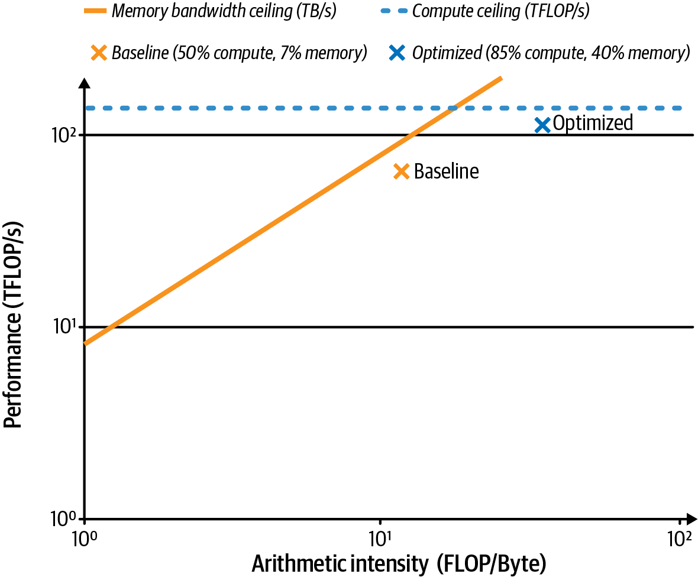

第 13 章 PyTorch 剖析、调优和扩展 (Profiling, Tuning, and Scaling PyTorch)¶
AI 训练与推理流水线可能在每一层都遭遇性能瓶颈（bottleneck），包括 Python 解释器开销（overhead）、CPU 主机侧的数据加载停顿、CUDA 核函数利用不足，以及 GPU 设备内存争用。要做到有效优化，你需要借助覆盖整个系统的多种工具，在技术栈的多个层次上进行剖析（profiling）。
AI training and inference pipelines can suffer from performance bottlenecks at every layer, including Python interpreter overhead, CPU host-side data-loading stalls, CUDA kernel underutilization, and GPU device-memory contention. To optimize effectively, you need to profile at multiple levels of the stack using multiple tools that cover the entire system.
本章聚焦于在现代 NVIDIA GPU 上运行的 PyTorch 工作负载的性能剖析、调试与系统级调优（tuning）。我们将探讨如何利用 PyTorch 内置的剖析器、NVIDIA 的 Nsight 工具，以及使用 Linux perf 的 CPU 剖析来定位并修复瓶颈——此外还包括 PyTorch 内存剖析与内存分配器调优。我们还会讨论 PyTorch 如何使用 CUDA 流（CUDA stream）实现并发（concurrency），以及如何用 CUDA Graphs 降低核函数启动开销。
This chapter focuses on profiling, debugging, and system-level tuning of PyTorch workloads running on modern NVIDIA GPUs. We will explore how to identify and fix bottlenecks using PyTorch's built-in profiler, NVIDIA's Nsight tools, and CPU profiling with Linux perf-as well as PyTorch memory profiling and memory allocator tuning. We'll also discuss how PyTorch uses CUDA streams for concurrency and CUDA Graphs to reduce kernel launch overhead.
接下来，我们将展示如何优化数据流水线，并借助 PyTorch 分布式数据并行（Distributed Data Parallel，DDP）、完全分片数据并行（Fully Sharded Data Parallel，FSDP）以及其他模型并行策略扩展（scaling）到多块 GPU。随后，我们会演示如何剖析多 GPU 与多节点环境，包括全局追踪分析（Holistic Trace Analysis，HTA）与 Perfetto。
Next, we'll show how to optimize data pipelines and scale out to multiple GPUs with PyTorch Distributed Data Parallel (DDP), Fully Sharded Data Parallel (FSDP), and other model parallelism strategies. We'll then demonstrate how to profile multi-GPU and multinode environments, including Holistic Trace Analysis (HTA) and Perfetto.
在全章中，我们强调性能权衡，并给出量化示例，聚焦于核函数执行时间、硬件利用率指标、内存占用、数据加载效率，以及扩展的整体成本效益。读完本章，你应当理解如何在整个技术栈上，对 PyTorch 工作负载实施一套有效且全局性的剖析与调优方法。
Throughout the chapter, we emphasize performance trade-offs and quantitative examples that focus on kernel execution times, hardware utilization metrics, memory footprint, data loading efficiency, and overall cost-efficiency of scaling. By the end of this chapter, you should have an understanding of how to implement an effective, holistic approach to profiling and tuning PyTorch workloads across the entire stack.
13.1 NVTX 标记和剖析工具 (NVTX Markers and Profiling Tools)¶
要全面把握性能全貌，就必须在多个层次上进行剖析，并使用覆盖整个系统的工具。从业者与性能工程师有一套通用工具和最佳实践，用于在系统技术栈的所有层次上执行全局性剖析。
To capture a holistic view of performance, it's important to profile at multiple levels and use tools that cover the entire system. There exists a set of common tools and best practices used by practitioners and performance engineers to perform holistic profiling across all the layers in the system stack.
在介绍这些工具之前，有必要先重点说明 NVIDIA Tools Extension（NVTX）以及 NVTX 标记（NVTX marker）。这些标记在剖析器的时间线视图（timeline view）中标示出时间区间，并让不同的剖析器能够在相同阶段之间关联事件。
Before we get to the tools, it's important to highlight the NVIDIA Tools Extension (NVTX) and NVTX markers. These markers denote time ranges in a profiler's timeline view and allow different profilers to correlate events across the same phases.
例如，一个名为 "forward" 的 NVTX 区间（NVTX range）会同时出现在 PyTorch 剖析器的追踪（trace）和 Nsight Systems 的时间线中。这让技术栈不同层次上的跨工具分析变得容易得多。大多数现代 AI 框架和库都支持 NVTX 标记，包括 PyTorch 以及与 CUDA 生态相关的一切。
For example, an NVTX range for "forward" will appear in both PyTorch profiler traces and Nsight Systems' timelines. This makes cross-tool analysis much easier at different layers of the stack. NVTX markers are supported by most modern AI frameworks and libraries, including PyTorch and anything related to the CUDA ecosystem.
NVTX 标记可以通过 CUDA C++、PyTorch，或任何支持 NVIDIA GPU 的 C++ 或 Python 库（如 OpenAI Triton、PyCUDA、CuPy、cuTile、cuTe、CUTLASS 等）注入代码。大多数库已经替你在关键代码区域自动注入了 NVTX 标记，例如 "trainstep"、"forward"、"backward"、"optimizerstep" 等。
NVTX markers are injected into code using either CUDA C++, PyTorch, or any C++ or Python library that supports NVIDIA GPUs (e.g., OpenAI Triton, PyCUDA, CuPy, cuTile, cuTe, CUTLASS, etc.). Most libraries already inject NVTX markers on your behalf for critical regions of code, such as "trainstep", "forward", "backward", "optimizerstep", etc.
但你也可以自己注入它们，例如在 PyTorch 中使用torch.profiler.record_function()和torch.cuda.nvtx.range_push()。
But you can also inject them yourself using torch.profiler.recordfunction() and torch.cuda.nvtx.rangepush() in PyTorch, for instance.
既然我们已经说明了如何用 NVTX 标记标注代码中值得关注的部分，接下来就讨论那些能够摄取、对齐并可视化这些标记的工具。表 13-1 汇总了常见的剖析工具，以及它们的适用范围、关键特性和典型用途。这张表可以帮助你在优化旅程的每个阶段选择合适的工具。
Now that we've described how to annotate interesting sections of your code using NVTX markers, let's discuss the tools that can ingest, align, and visualize these markers. Common profiling tools are summarized in Table 13-1 along with their scope, key features, and typical use cases. This table can help you choose the right tool for each stage of your optimization journey.
表 13-1. 剖析和可视化工具摘要
| 工具 | 范围 | 特性 | 典型用例 |
|---|---|---|---|
| PyTorch profiler (Kineto) | PyTorch 内部操作级分析（CPU/GPU） | NVTX 标记支持、形状记录、内存统计、追踪导出、编译图断点识别 | 模型代码的细粒度分解；识别慢速操作、GPU 核函数启动开销或前向/反向时间不平衡 |
| Nsight Systems (nsys) | 系统级时间线（CPU、GPU、OS、I/O） | CPU 线程和 GPU 流的统一时间线、NVTX 集成、多进程支持 | 训练/推理流水线的端到端视图；检测数据加载器停顿、CPU-GPU 重叠问题或 GPU 间同步延迟 |
| Nsight Compute (ncu) | GPU 核函数分析（每个核函数） | 每个核函数的硬件指标、源代码关联、roofline 分析、占用率和吞吐量报告 | 在识别热点核函数后深入分析核函数效率；确定核函数是内存受限还是计算受限，以及原因 |
| PyTorch memory profiler | 按操作的 GPU 内存使用情况 | 内存快照时间线、每个操作的峰值内存、torch.cuda.memorystats()和 torch.cuda.memget_info()集成 | 诊断内存碎片或意外的高内存使用。查看哪些操作分配最多内存以及何时分配，以优化内存占用 |
| Linux perf | CPU 剖析和系统事件 | CPU 周期/指令/缓存采样、火焰图、off-CPU（睡眠）分析 | 识别 Python 开销（解释器时间、GIL 争用）、CPU 端数据加载瓶颈或主机 OS 调度问题 |
| Holistic Trace Analysis (HTA) | 分布式训练追踪可视化 | 基于浏览器的 Kineto 追踪浏览器、多工作进程追踪聚合；集成 Perfetto 后端 | 整体分析多 GPU/多节点执行。发现不平衡或空闲时间，验证通信与计算的重叠 |
| Chrome trace/Perfetto | 离线追踪查看（基于 Web） | 标准追踪格式的 Web UI、高级过滤（Perfetto SQL 引擎）、易于追踪共享 | 无需专用软件检查追踪。适用于性能仪表板或剖析数据的远程协作 |
| TorchEval (metrics) | 模型指标和性能日志记录 | 标准化指标 API（吞吐量、准确率等）、易于集成 | 在训练和评估期间记录和监控模型吞吐量/延迟以及准确率，以关联性能与模型质量 |
| ExecuTorch | 移动、嵌入式和边缘设备的部署运行时，具有轻量级剖析钩子和导出工具 | 模型导出、剖析、调试、内存分析、可视化 | 用于在受限平台上运行 PyTorch 模型并收集运行时指标，如移动、嵌入式和边缘设备，包括 Meta 眼镜等 |
Table 13-1. Summary of profiling and visualization tools
以下是表 13-1 中每个剖析工具的详细描述：
Here is a detailed description of each profiling tool in Table 13-1:
PyTorch profiler (Kineto)
在 PyTorch 内部，torch.profiler 基于开源项目 Kineto，提供 CPU 与 CUDA/GPU 运行时（runtime）的算子级（op-level）拆解。此外，它还能通过简单的 Python 上下文管理器记录输入形状并抓取内存快照。PyTorch 剖析器可以在训练与推理工作负载中捕获详细的时间线追踪和硬件计数器，并利用 NVTX 区间对齐事件。它提供从 Python 代码一直到 CUDA 核函数的端到端可观测性——甚至还能针对数据加载停顿、低效 CUDA 代码等常见问题给出性能建议。
Within PyTorch, the torch.profiler, based on the Kineto open source project, provides operator-level breakdowns of CPU and CUDA/GPU runtimes. In addition, it can record input shapes and take memory snapshots using simple Python context managers. The PyTorch profiler can capture detailed timeline traces and hardware counters across training and inference workloads using NVTX ranges to align the events. It provides end-to-end observability from Python code down to the CUDA kernels-and even provides performance tips for common issues like data-loading stalls and inefficient CUDA code.
Nsight Systems (nsys)
nsys*)* 为了实现系统级关联——涵盖 CPU 线程、GPU 核函数、操作系统事件、I/O 与互连流量——NVIDIA Nsight Systems 生成一条统一的时间线视图。它的 GUI 和 CLI 报告可以在多进程、多节点运行中合并 NVTX 区域、Python 调用栈与 CUDA 流。这让人很容易发现 I/O 和同步停顿在何处影响了计算性能。
For system-wide correlation, including CPU threads, GPU kernels, OS events, I/O, and interconnect traffic, NVIDIA Nsight Systems produces a unified timeline view. Its GUI and CLI reports can merge NVTX zones, Python call stacks, and CUDA streams across multiprocess and multinode runs. This makes it easy to spot where I/O and synchronization stalls might be impacting compute performance.
Nsight Compute (ncu)
ncu*)* 与 Nsight Systems 互补的是用于逐核函数分析的 NVIDIA Nsight Compute。Nsight Compute 收集详细的硬件指标，例如占用率（occupancy）、内存带宽和 SM（流式多处理器，streaming multiprocessor）利用率。它甚至能生成映射到源码的 Roofline 图。在其他更高层的工具识别出哪些核函数是热点之后，Nsight Compute 有助于回答某个核函数为何缓慢（例如访存受限（memory bound）、占用率偏低）。
Complementing Nsight Systems is NVIDIA Nsight Compute for per-kernel analysis. Nsight Compute collects detailed hardware metrics such as occupancy, memory bandwidth, and SM utilization. It can even generate roofline charts mapped to source code. Nsight Compute helps answer why a particular kernel is slow (e.g., memory bound, low occupancy) after other higher-level tools identify which kernels are the hotspots.
PyTorch memory profiler
PyTorch 还内置了一个内存剖析器，你可以在 torch.profiler 中通过 profile_memory=True 启用它。PyTorch 内存剖析器会按操作拆解 GPU 内存的峰值分配和累计分配。这能揭示那些原本可能被忽视的内存使用热点。
PyTorch also includes a memory profiler, which you can enable with profile_memory=True in torch.profiler. The PyTorch memory profiler breaks down peak and cumulative GPU memory allocations per operation. This reveals memory usage hotspots that might otherwise go unnoticed.
Linux perf
perf 在主机侧，Linux 的 perf 工具可以采样 CPU 硬件计数器，包括周期数、指令数和缓存缺失——并展开完整的 C/C++ 与 Python 调用图。从 perf sched 入手，你能看到 CPU 线程何时因 I/O 或线程调度/同步而处于空闲。这能揭示数据预处理循环、Python 的 GIL 或同步中可能使 GPU 挨饿的瓶颈。
On the host side, Linux's perf tool can sample CPU hardware counters, including cycles, instructions, and cache misses-and unwind full C/C++ and Python call graphs. Starting with perf sched, you can see when CPU threads sit idle due to I/O or thread scheduling/synchronizing. This uncovers bottlenecks in data preprocessing loops, Python's GIL, or synchronization that can starve the GPU.
Holistic Trace Analysis
Meta 开源的全局追踪分析（HTA）工具会摄取 PyTorch 剖析器的追踪，帮助诊断多 GPU 瓶颈。借助 HTA，你可以把带有 NVTX 区间的分布式训练时间线与 CUDA 核函数追踪并列可视化。通过深入分析内存分配模式随时间的变化，你能识别出 GPU 空闲的时段——包括 GPU 相互等待的时刻。
Meta's open source Holistic Trace Analysis (HTA) tool ingests PyTorch profiler traces to help diagnose multi-GPU bottlenecks. With HTA, one can visualize distributed training timelines with NVTX ranges alongside CUDA kernel traces. By drilling into memory allocation patterns over time, you can identify periods of idle GPU-including when GPUs are waiting on each other.
TensorBoard 的 PyTorch 追踪可视化插件已被弃用。请改用 Perfetto 进行时间线查看，并使用 Meta 的 HTA 进行分布式追踪分析。
TensorBoard's PyTorch trace visualization plugin is deprecated. Use Perfetto for timeline viewing and Meta's HTA for distributed trace analysis instead.
Chrome trace 和 Perfetto 查看器
Chrome trace and Perfetto viewer
要在网页端探索大型 PyTorch 剖析器追踪文件，你可以使用 Chrome tracing（例如在浏览器中打开 chrome://tracing）和 Perfetto 界面。它们会加载 JSON 追踪文件，让你交互式地探索时间线视图和火焰图。它们甚至支持对追踪数据做细粒度过滤和 SQL 查询——在事件追踪与关联层面可细至亚毫秒级。Chrome 追踪与 Perfetto 界面非常适合在组织成员之间共享剖析结果，以进行跨团队分析。（注：Chrome 的旧版追踪查看器已被弃用，因此查看和分析追踪时应优先使用 Perfetto 的网页界面和 SQL 引擎。）
For web-based exploration of large PyTorch profiler trace files, you can use Chrome tracing (e.g., chrome://tracing in the browser) and Perfetto UIs. These will load the JSON traces and let you interactively explore timeline views and flame charts. They even let you perform fine-grained filtering and SQL queries on the trace data-down to the submillisecond level for event tracing and correlation. Chrome traces and the Perfetto UI are ideal for sharing profile results between members of your organization for cross-team analysis. (Note: Chrome's legacy trace viewer is deprecated, so you should prefer the Perfetto web UI and SQL engine for viewing and analyzing traces.)
TorchEval（PyTorch 的指标库）
TorchEval (PyTorch's Metrics Library)
另一个项目 TorchEval 让你在统一的界面中记录和监控模型吞吐量、延迟和质量指标以及训练和评估指标。TorchEval 是 PyTorch 的官方指标库，为端到端性能和质量指标提供简单的 API。该库使插入训练循环和在分布式环境中集成变得容易。
Another project, TorchEval, lets you log and monitor model throughput, latency, and quality metrics alongside training and evaluation metrics-all within a unified interface. TorchEval is PyTorch's official metrics library and provides a simple API for end-to-end performance and quality metrics. This library makes it easy to plug into training loops and integrate across distributed environments.
ExecuTorch
面向嵌入式、移动和边缘设备，ExecuTorch 项目支持在诸如 Meta 眼镜等轻量级运行时环境中对 PyTorch 模型进行剖析、可视化和调试。ExecuTorch 具有小而动态的内存占用，并支持 Linux、iOS、Android 和嵌入式系统。Hugging Face 通过其 Optimum ExecuTorch 项目支持 ExecuTorch；如果你已经在使用 Hugging Face 生态（如 Hugging Face Transformers），这个环境会很容易集成。
For embedded, mobile, and edge devices, the ExecuTorch project allows profiling, visualizing, and debugging PyTorch models in lightweight runtime environments like Meta glasses. ExecuTorch has a small, dynamic memory footprint and supports Linux, iOS, Android, and embedded systems. Hugging Face supports ExecuTorch through its Optimum ExecuTorch project, which makes the environment easy to integrate if you're already using the Hugging Face ecosystem, like Hugging Face Transformers.
接下来，让我们深入一个示例，看看如何使用这些剖析器来定位性能瓶颈。随后，我们会施加有针对性的优化，并验证性能改进。
Next, let's dive into an example of using these profilers to identify performance bottlenecks. We'll then apply targeted optimizations and verify the performance improvements.
13.2 使用 PyTorch 分析器识别瓶颈 (Profiling PyTorch to Identify Bottlenecks)¶
让我们剖析一个示例——专家混合（mixture-of-experts，MoE）Transformer 模型，看看这些工具的实际效果。MoE 是带有多个专家层的 LLM——每个专家都是一个前馈网络。将 token 路由到各专家由一套专家门控系统管理。我们将运行一次训练迭代，捕获详细的性能追踪，并分析输出以指导优化。
Let's profile an example mixture-of-experts (MoE) transformer model to see these tools in action. MoEs are LLMs with multiple expert layers-each expert is a feed-forward network. Routing tokens to experts is managed by an expert gating system. We will run a single training iteration, capture detailed performance traces, and analyze the output to guide our optimizations.
13.2.1 使用 PyTorch 分析器 (Using PyTorch Profiler)¶
首先，我们搭建模型和输入。我们用 Hugging Face Transformers 加载模型和分词器，将模型移动到 GPU，并准备一小批输入，如下所示：
First, we set up the model and input. We use Hugging Face Transformers to load the model and tokenizer, move the model to GPU, and prepare a small batch of inputs, as shown here:
# train.py
# Set up model and data
model_name = "..."
tokenizer = AutoTokenizer.from_pretrained(model_name)
device = torch.device("cuda")
model = AutoModelForCausalLM.from_pretrained(model_name).to(device)
optimizer = torch.optim.AdamW(model.parameters(), lr=1e-4,
fused=True)
batch_size = 4
input_texts = ["MoEs are great."] * batch_size
enc = tokenizer(input_texts, return_tensors="pt", padding=True,
truncation=True)
input_ids = enc.input_ids.to(device)
attention_mask = enc.attention_mask.to(device)
labels = input_ids.clone() # For LM training, labels are the inputs
# (next-token prediction)
为避免把一次性的初始化开销计入测量，我们在剖析之前先运行几次预热迭代。这会通过编译 JIT 核函数、填充缓存等方式，为分析和基准测试准备好模型。这样一来，我们测量的那次迭代就能代表稳态性能。下面是准备模型的代码：
To avoid capturing one-time setup costs, we run a few warm-up iterations before profiling. This will prepare the model for analyzing and benchmarking by compiling JIT kernels, filling caches, etc. This way, our measured iteration is representative of steady-state performance. Here is the code to prepare the model:
# Warm-up (not profiled)
for _ in range(5):
with torch.autocast(device_type="cuda", dtype=torch.bfloat16):
outputs = model(input_ids, attention_mask=attention_mask,
labels=labels)
loss = outputs.loss
loss.backward()
optimizer.step()
optimizer.zero_grad(set_to_none=True)
现在，我们使用 PyTorch 的剖析器和 NVTX 剖析一次训练迭代。我们用 torch.profiler.profile() 包裹这次迭代，并用 recordfunction 和 NVTX 区间标记高层区域，包括 "forward"、"backward" 和 "optimizerstep"，如下所示：
Now we profile one training iteration using PyTorch's profiler and NVTX. We wrap the iteration in torch.profiler.profile() and mark high-level regions with recordfunction and NVTX ranges, including "forward", "backward", and "optimizerstep", as shown here:
from torch import profiler
with profiler.profile(
activities=[profiler.ProfilerActivity.CPU,
profiler.ProfilerActivity.CUDA],
record_shapes=True, # record tensor shapes
profile_memory=True, # track GPU memory usage per op
with_stack=True, # enable stack tracing
with_flops=True # capture FLOPs counters
) as prof:
with profiler.record_function("train_step"):
# Forward pass
torch.cuda.nvtx.range_push("forward")
with torch.autocast(device_type="cuda",
dtype=torch.bfloat16):
outputs = model(input_ids, attention_mask=attention_mask,
labels=labels)
loss = outputs.loss
# end of forward
torch.cuda.nvtx.range_pop()
# Backward pass and optimization
torch.cuda.nvtx.range_push("backward")
loss.backward()
torch.cuda.nvtx.range_push("optimizer_step")
optimizer.step()
# end of optimizer_step
torch.cuda.nvtx.range_pop()
optimizer.zero_grad()
# end of backward
torch.cuda.nvtx.range_pop()
在这段代码中，PyTorch 剖析器会记录 trainstep 期间的所有 CPU 与 GPU 活动。我们用 recordfunction("trainstep") 定义一个顶层区域，并为各子阶段（"forward"、"backward"、"optimizerstep"）插入 NVTX 标记。这些标记会出现在剖析器的时间线中，用来划分迭代的各个阶段。
In this code, the PyTorch profiler is recording all CPU and GPU activities during the trainstep. We use recordfunction("trainstep") to define a top-level region. We also insert NVTX markers for the subphases ("forward", "backward", "optimizerstep"). These markers will appear in profiler timelines to delineate phases of the iteration.
剖析器还能突出显示模型中已编译与未编译的区域。我们会在本章后面以及下一章介绍 PyTorch 编译器（PyTorch Compiler）、图中断（graph break）以及缓解图中断的机制。
The profiler can also highlight compiled versus noncompiled regions of the model. We'll cover the PyTorch Compiler, graph breaks, and mechanisms to mitigate graph breaks later in this chapter-as well as the next chapter.
例如，使用 torch.compile 时，追踪中会显示诸如 Compiled Function 之类的事件，并标示出任何图中断（见图 13-1）。这有助于精确定位模型在何处回退到了即时执行，从而指导进一步的优化。
For instance, when using torch.compile, the trace will show events like CompiledFunction and indicate any graph breaks (see Figure 13-1). This helps pinpoint where the model fell back to eager execution, which will guide further optimizations.

图13-1 编译（左和中间，粉色）与非编译（右侧，绿色）区域
Figure 13-1. Compiled (left and middle, pink) versus noncompiled (right, green) regions (source: https://oreil.ly/Z_fJG)
执行完成后，我们可以调用 prof.key_averages().table() 来查看算子级结果，打印出一张按运行时间排序的头部算子简表。在下一个代码块中，我们请求按自身 CUDA 时间排序的前 10 个操作；自身 CUDA 时间指的是花在每个操作自有 CUDA 核函数上的时间，不包括该核函数派生出的子操作。按 CUDA 执行时间排名前 10 的操作汇总于表 13-2：
After execution, we can examine the operation-level results by calling prof.key_averages().table() to print a concise table of the top operators by runtime. In the next code block, we request the top 10 operations sorted by their self CUDA time, which is the time spent in each operation's own CUDA kernels excluding child operations spawned by the kernel. The top 10 operations by CUDA execution time are summarized in Table 13-2:
with profiler.profile(
activities=[ProfilerActivity.CPU,
ProfilerActivity.CUDA],
record_shapes=True,
profile_memory=True,
) as prof:
train_step(...)
...
print(
prof.key_averages()
.table(
sort_by="self_cuda_time_total",
row_limit=10,
fields=["self_cuda_time_total",
"calls"]
)
)
表 13-2. 一次训练迭代中分析器按 CUDA 执行时间排序的前 10 个操作
| 操作 | Self CUDA 总时间 | 调用次数 |
|---|---|---|
| aten::matmul | 43.00 ms | 128 |
| aten::linear | 35.50 ms | 64 |
| dispatch | 18.70 ms | 2 |
| combine | 12.10 ms | 2 |
| aten::layer_norm | 10.20 ms | 16 |
| aten::softmax | 5.70 ms | 4 |
| aten::scatter | 4.10 ms | 16 |
| aten::gather | 3.60 ms | 16 |
| aten::to | 2.90 ms | 8 |
| aten::add_ | 2.20 ms | 64 |
这里可以看到，矩阵乘法操作（aten::matmul，以及它在 aten::linear 中的使用）主导了 CUDA 时间，占据了这次迭代的绝大部分。这些操作对应于专家前馈网络（feed-forward network，FFN）的 GEMM（通用矩阵乘法，general matrix multiply）。具体来说，每次迭代对 matmul 有 128 次调用。这是合理的，因为我们有 64 个专家——而每个专家在 forward 和 backward 两个阶段各做一次 matmul。
Here, we see that the matrix multiplication operations (aten::matmul, and its use in aten::linear) dominate the CUDA time and consume the majority of the iteration. These operations correspond to the expert feed-forward network (FFN) GEMMs. Specifically, there are 128 calls to matmul per iteration. This makes sense since we have 64 experts-and each expert does a matmul in both the forward and backward passes.
在表 13-2 中，接下来开销最大的是 dispatch 和 combine 操作。它们是自定义的 C++/CUDA 核函数，负责把 token 重新分发给各专家——再收集专家的输出。dispatch 操作运行两次——forward 阶段一次、backward 阶段一次——总计 18.7 ms。combine 也运行两次，共 12.1 ms。这两个操作合计又占用了 30.8 ms 的 GPU 时间。其余时间则分散在层归一化、激活函数等其他较小的操作上。
In Table 13-2, we see the next largest costs are from the dispatch and combine operations. These are custom C++/CUDA kernels that redistribute tokens to experts-and then gather the outputs of the expert. The dispatch operation runs twice-once in the forward pass and once in the backward pass-for a total of 18.7 ms. The combine ran twice for 12.1 ms total. Together, these two operations account for another 30.8 ms of GPU time. The remaining time is spread across other smaller ops like layer norms, activations, etc.
这个剖析示例的关键要点是：专家 FFN 的 matmul 是最大的瓶颈，其次是 dispatch 和 combine 核函数。它们共同主导了一次训练迭代的运行时间。要进一步提升性能，我们应当针对这些操作——要么直接优化它们，要么减少它们被调用的次数。
The key takeaway from this profiling example is that the expert FFN matmul is the top bottleneck, followed by the dispatch and combine kernels. Together, these dominate a training iteration's runtime. To improve performance further, we should target those operations either by optimizing them directly or by reducing the number of times they're called.
13.2.2 使用 Nsight Systems 和 NVTX 时间线进行系统分析 (System Profiling with Nsight Systems and NVTX Timelines)¶
我们插入的 NVTX 标记让用 Nsight Systems 分析时间线变得直截了当。要按阶段聚合指标，我们可以用 nsys 结合基于 NVTX 的汇总来剖析代码，如下面的 CLI 命令所示：
The NVTX markers that we inserted make it straightforward to analyze the timeline with Nsight Systems. To aggregate metrics per phase, we can profile the code using nsys with an NVTX-based summary, as shown in the CLI command here:
这里，-t cuda,nvtx 选项指示 Nsight Systems 同时追踪 CUDA API 调用和 NVTX 区间。剖析完成后，我们可以在 Nsight Systems 的 GUI 中打开 profile.nsys-rep 文件（--output=profile），或用 CLI 将 NVTX 汇总打印到终端。随后，我们可以用 CLI，对 profile.nsys-rep 文件执行下列命令之一来生成 NVTX GPU 投影汇总（GPU projection summary），如下所示，以便用 Nsight Systems 将区间与投影出的 GPU 工作量相互校验：
Here, the -t cuda,nvtx option instructs Nsight Systems to trace both CUDA API calls and NVTX ranges. After profiling, we can open the profile.nsys-rep file (--output=profile) in the Nsight Systems GUI or use the CLI to print the NVTX summary to the terminal. We can then use the CLI to generate the NVTX GPU Projection Summary using one of the following commands on the profile.nsys-rep file, as shown here to validate ranges against projected GPU work with Nsight Systems:
nsys stats --report=nvtx_gpu_proj_sum \
profile.nsys-rep
# or
nsys recipe nvtx_gpu_proj_sum \
profile.nsys-rep
你可以在持续构建与集成流水线中使用这些命令之一，来监控并检测任何性能回归（regression）。该 CLI 命令的结果汇总于表 13-3。
You can use one of these commands in your continuous build and integration pipelines to monitor and detect any performance regressions. The results of this CLI command are summarized in Table 13-3.
表 13-3. 使用 Nsight Systems 进行一次 train_step 迭代的 NVTX GPU 投影摘要
| NVTX 范围 | GPU 时间（ms） | Self GPU 时间（ms） | 子 GPU 时间（ms） | 实例（调用次数） |
|---|---|---|---|---|
| train_step | 138.0 | 0.0 | 138.0 | 1 |
| forward | 60.5 | 60.5 | 0.0 | 130 |
| backward | 58.3 | 58.3 | 0.0 | 130 |
| optimizer_step | 19.2 | 19.2 | 0.0 | 1 |
这里可以看到，trainstep 区间包含 forward、backward 和 optimizer 三个子区间。这份 NVTX GPU 投影汇总确认，trainstep 下的 GPU 总时间为 138 ms。这一时间与表 13-2 中 PyTorch 剖析器输出的 forward、backward 和 optimizer_step 时间之和相吻合，表明两种工具之间是一致的。
Here, we see the trainstep range includes the forward, backward, and optimizer subranges. This NVTX GPU Projection Summary confirms that the total GPU time under trainstep is 138 ms. This time matches the sum of the forward, backward, and optimizer_step times from the PyTorch profiler output in Table 13-2. This shows consistency between tools.
此外，尽管表 13-3 只显示了一次 optimizerstep 调用，但它的 NVTX 区间实际上把全部 64 次 aten::add CUDA 核函数启动（如表 13-2 所示，每个专家一次 add_）都归拢在这个 optimizer_step 标记之下。
And although Table 13-3 shows a single optimizerstep call, its NVTX range actually brackets all 64 aten::add CUDA kernel launches (one add_ per expert as shown in Table 13-2) under the single optimizer_step marker.
请注意，Nsight Systems 之所以把这 64 次 aten::add_ 调用（例如 64 路专家并行策略）归并到单个 optimizerstep 标记下，是因为它使用 CUDA Profiling Tools Interface（CUPTI）在主机端捕获 NVTX 的 push/pop 事件。随后，它把异步的 GPU 核函数执行时间"投影"到这些由 CPU 定义的区间上。因此，它会把每个 GPU 起止时间戳落在相应 push 与 pop 调用之间的核函数的持续时间累加起来。这就得到一个累计 GPU 时间，恰好等于各个 aten::add 核函数时间的总和。
Note that Nsight Systems groups the 64 aten::add_ calls (e.g., 64-way expert parallelism strategy) into a single optimizerstep marker because it uses the CUDA Profiling Tools Interface (CUPTI) to capture NVTX push/pop events on the host. It then "projects" asynchronous GPU kernel execution times onto these CPU-defined intervals. As such, it sums the durations of every kernel with GPU start/end timestamps that fall between the corresponding push and pop calls. This produces one cumulative GPU time that exactly matches the total of the individual aten::add kernels.
forward 和 backward 区间各自的自身 GPU 时间（self GPU time）都等于其总时间，因为我们没有在它们内部再嵌套更深的区间。因此，子 GPU 时间（child GPU time）为 0 ms。而 train_step 则几乎全部时间都是子 GPU 时间，因为它只是包裹这些嵌套阶段的一层外壳。
The forward and backward ranges each have self GPU time equal to their total time since we didn't choose to nest deeper ranges inside of them. As such, child GPU time is 0 ms. However, train_step has nearly all of its time as child GPU time since it's just a wrapper around the nested phases.
NVTX GPU 投影汇总还显示，在每次迭代中，我们在 train_step 内部观察到 130 个 GPU 活动。它们包括核函数启动以及内存拷贝等其他设备操作，因此并不是严格地与核函数一一对应。
The NVTX GPU projection summary also shows that, in each iteration, we observed 130 GPU activities inside train_step. These include kernel launches and other device operations such as memory copies, so they are not strictly one-to-one with kernels.
如表 13-3 所示，这 130 次 GPU 核函数调用同样发生在 backward 和 forward 两个阶段。操作与 NVTX 实例之间的这种一一对应，意味着我们的插桩捕获了每一个重要操作。
As you can see in Table 13-3, the 130 GPU kernel calls happen for both the backward and forward passes as well. This one-to-one correspondence between operations and NVTX instances means that our instrumentation captures every important operation.
我们在表 13-3 中展示的 NVTX 汇总是一份便捷的文本概览。若要做可视化分析，时间线 GUI 可以显示重叠的核函数执行、CPU 线程状态，甚至 CUDA API 的开销事件。实践中，你需要在可视化时间线中确认主机侧的数据加载和预处理是否与 GPU 计算相互重叠。任何较大的空隙，即"气泡"（bubble），都表明存在问题。用于同步的小空隙则是预期且合理的。
The NVTX summary we show in Table 13-3 is a convenient text overview. For visual analysis, the timeline GUI can show overlapping kernel execution, CPU thread states, and even CUDA API overhead events. In practice, you want to verify that host-side data loading and preprocessing are overlapping with GPU compute in the visual timeline. Any large gaps, or "bubbles," indicate a problem. Small gaps for synchronization are expected and appropriate.
在多 GPU 运行中，Nsight Systems 或 HTA 的时间线视图可以揭示 NVLink 或 InfiniBand/以太网是否被有效利用——或者某个节点是否在等待通信或网络延迟时无事可做。这会提示存在次优的同步或负载不均衡。
On a multi-GPU run, the Nsight Systems or HTA timeline view can reveal if NVLink or InfiniBand/Ethernet is being utilized effectively-or if a node is starved for work while waiting for communication or network delays. This would hint at suboptimal synchronization or load imbalance.
追踪 GPU 通信事件很重要，包括用 Nsight Systems 和 HTA 提供追踪，来记录 NCCL 的 all-reduce 调用以及 NVLink/NVSwitch 活动。这些有助于验证 GPU 在诸如基于 NVL72 的系统这类超大规模 GPU 域中是否保持繁忙。
It's important to trace GPU communication events, including NCCL all-reduce calls and NVLink/NVSwitch activity using Nsight Systems and HTA to provide traces. These help verify that the GPUs stay busy in massive GPU domains such as an NVL72-based system.
细致的剖析可以确保系统在这些大型 NVLink 集群中使用了恰当的 GPU 间同步，并均衡了工作负载。现在，让我们聚焦系统中开销最大的核函数之一：矩阵乘法，即 matmul。
Careful profiling makes sure the system is using proper inter-GPU synchronization and balancing the workload in these large NVLink clusters.
由于在没有附加剖析器时 NVTX 标记的开销极低，这种投影机制堪称理想：它在提供 GPU 工作与高层代码区域端到端关联的同时，几乎不增加任何开销。
Because NVTX markers have very low overhead when no profiler is attached, this projection mechanism is ideal because it adds negligible overhead while still providing end-to-end correlation of GPU work with high-level code regions.
现在让我们放大系统中开销最大的核函数之一：矩阵乘法或 matmul。
Let's now zoom in on one of the most expensive kernels in the system: the matrix multiply, or matmul.
13.2.3 通用矩阵乘法（GEMM）的核函数 Roofline 分析 (Kernel Roofline Analysis for General Matrix Multiply (GEMM))¶
为了更深入地分析专家的 matmul，我们调用命令行剖析器 Nsight Compute（ncu），按名称定位特定的 GEMM 核函数。我们将收集与 roofline 相关的指标，以判断它是计算受限（compute bound）还是访存受限，如下所示：
To dive deeper and analyze the expert matmul, we invoke the CLI profiler Nsight Compute (ncu) to target specific GEMM kernels by name. We'll collect roofline-related metrics to determine if it's compute bound or memory bound, as shown here:
ncu \
--target-processes all \
--kernel-name-regex "matmul" \
--metrics \
gpu__time_duration.avg, \
gpu__dram_throughput.avg.pct_of_peak_sustained_elapsed, \
lts__throughput.avg.pct_of_peak_sustained_elapsed, \
sm__sass_thread_inst_executed_op_fp32_pred_on.sum, \
sm__warps_active.avg.pct_of_peak_sustained_active \
--csv full \
-o matmul_roofline_report \
python train.py
这里，我们为任何名称匹配 "matmul" 的核函数收集硬件计数器。具体来说，我们收集几个关键指标，包括以峰值百分比表示的 GPU DRAM 带宽和 L2 带宽（gpudramthroughput.avg.pctofpeaksustained_elapsed、ltsthroughput.avg.pctofpeaksustainedelapsed）、作为计算代理的 FP32 指令数（smsassthreadinstexecutedopfp32pred_on.sum）、核函数时间（gputimeduration.avg），以及实测占用率（sm__warpsactive.avg.pctofpeaksustainedactive）。
Here, we are collecting hardware counters for any kernel whose name matches "matmul". Specifically, we collect a few key metrics, including GPU DRAM bandwidth and L2 bandwidth as a percent of peak (gpudramthroughput.avg.pctofpeaksustained_elapsed, ltsthroughput.avg.pctofpeaksustainedelapsed), FP32 instruction count as a compute proxy (smsassthreadinstexecutedopfp32pred_on.sum), kernel time (gputimeduration.avg), and achieved occupancy (sm__warpsactive.avg.pctofpeaksustainedactive).
指标标识符在不同的 Nsight Compute 版本之间可能略有差异。如果找不到某个指标，请用 UI 定位当前的名称并相应替换。这里，我们剖析的是 SM 和 DRAM 占峰值持续值的百分比，以及实测占用率。
Metric identifiers can vary slightly across Nsight Compute releases. If a metric is not found, use the UI to locate the current name and substitute accordingly. Here, we are profiling SM and DRAM % of peak sustained and achieved occupancy.
在应用了目前为止讨论过的优化——例如降低精度、融合核函数以及提升算术强度（arithmetic intensity）——之后，我们可以重新运行 ncu 命令，验证这些优化是否产生了正面效果。表 13-4 展示了应用这些提升算术强度的优化前后的对比。
After applying the optimizations discussed until now, like reducing precision, fusing kernels, and increasing arithmetic intensity, we can rerun the ncu command to verify that our optimizations made a positive impact. Table 13-4 shows the comparison before and after applying these optimizations to improve arithmetic intensity.
表 13-4. 专家 matmul 核函数在算术强度优化前后的 Roofline 分析
| 核函数配置 | 峰值 FLOPS 百分比（SM 计算吞吐量） | 峰值内存带宽百分比（内存吞吐量） | 实现的 SM 占用率 | 特征 |
|---|---|---|---|---|
| 基线 | 50% | 70% | 60% | 内存受限（内存传输停顿） |
| 优化后 | 85% | 40% | 80% | 计算受限（接近硬件 roofline） |
这里可以看到，在基线运行中，主要的 GEMM 核函数只达到了约 50% 的峰值计算 FLOPS、70% 的峰值内存带宽，以及中等的 60% SM 占用率（每个 SM 上平均活跃的 warp 数）。这样的占用率不足以完全隐藏内存延迟。
Here we see, in the baseline run, the primary GEMM kernel achieves only about 50% of peak compute FLOPS, 70% of peak memory bandwidth, and a moderate 60% SM occupancy (average active warps per SM). This occupancy is not enough to fully hide memory latency.
没有通用的占用率目标。许多高性能核函数在 25-50%的实现占用率下实现完全延迟隐藏。使用 Nsight Compute 的占用率指标以及停顿原因分解和每个活跃周期的合格 warp 来判断更多占用率是否会减少核函数的停顿。如果核函数无法调度足够的 warp 来覆盖停顿期，这将导致空闲周期，因为内存请求没有得到足够快的服务。
There is no universal occupancy target. Many high-performance kernels achieve full latency hiding at 25-50% achieved occupancy. Use Nsight Compute's occupancy metrics together with stall-reason breakdown and eligible warps per active cycle to judge if more occupancy would reduce stalls in your kernel. If the kernel cannot schedule enough warps to cover stall durations, this leads to idle cycles since memory requests are not being serviced fast enough.
基线指标表明核函数是内存受限的，因为其执行被内存传输停顿。结果是大量未使用的计算能力，这进一步强化了该工作负载目前不是计算受限的。目标是使该核函数更加计算受限，以利用该 GPU 可用的大量 FLOPS。
The baseline metrics indicate that the kernel is memory-bound, as its execution is stalled by memory transfers. The result is a lot of unused compute capability, which further reinforces that this workload is not compute-bound at the moment. The goal is to make this kernel more compute-bound to take advantage of the massive FLOPS available on this GPU.
在优化版本（例如，融合核函数、增加算术强度和减少内存移动）中，峰值 FLOPS 增加到 85%，峰值内存带宽下降到 40%，占用率增加到 80%。我们有效地将核函数从内存受限转变为计算受限--更接近硬件的 roofline 限制，如图 13-2 所示。
In the optimized version (e.g., fused kernel, increased arithmetic intensity, and reduced memory movement), the peak FLOPS increased to 85%, and the peak memory bandwidth dropped to 40%, and occupancy increased to 80%. We effectively transformed the kernel from memory-bound to compute-bound-closer to the hardware's roofline limit, as shown in Figure 13-2.

图13-2 增加此核函数算术强度前后的Roofline图表
Figure 13-2. Roofline chart before and after increasing arithmetic intensity of this kernel
到目前为止，我们的剖析都集中在 GPU 性能上。同样重要的是，不要把时间浪费在 CPU 上或 I/O 操作上。在下一节中，我们将在主机侧继续这段剖析之旅。
Up to this point, our profiling has focused on GPU performance. It's also important to not waste time on the CPU or performing I/O. In the next section, we continue our profiling journey on the host side.
13.3 使用 Linux perf 进行 CPU 和 GPU 分析 (CPU and GPU Profiling with Linux perf)¶
为了更全面地了解时间在主机和设备两侧的花费情况，我们可以用 Linux perf 分析 CPU 周期数、缓存缺失、分支预测缺失等。随后，我们可以根据这些洞见推动一系列优化，逐一应用它们，并测量改进效果。
To get a more holistic view of where time is being spent across both the host and device, we can use Linux perf to analyze CPU cycles, cache misses, branch misses, etc. We can then use these insights to drive a series of optimizations, apply them one by one, and measure the improvements.
首先，让我们在一个搭载基于 ARM 的 Grace CPU 并配对 Blackwell GPU 的节点上，运行一次轻量级的 perf stat，以便在 MoE 训练运行期间收集 CPU 侧的统计数据。下面是 CLI 命令及示例输出：
First, let's run a lightweight perf stat to gather CPU-side statistics during the MoE training run on a node with an ARM-based Grace CPU paired with a Blackwell GPU. Here is the CLI command followed by example output:
Performance counter stats for 'python train.py':
# 0.600 CPUs utilized
1,200.345 msec task-clock
# Approximately 2.0 GHz
2,400,567,890 cycles
# 1.58 insn per cycle
3,800,123,456 instructions
# 0.32% of all cache refs
12,345,678 cache-misses
# 0.12% of all branches
4,567,890 branch-misses
1.234567890 seconds time elapsed
这份来自 perf stat 的报告显示了 CPU 利用率、周期数、每周期指令数（instructions per cycle，IPC）以及缓存/分支缺失。在我们的运行中，任务时钟约为 1.2 秒，在测量区间内只用到了单个 CPU 核心的约 60%（0.600）。这在意料之中，因为繁重的工作大多由 GPU 完成。较低的缓存缺失率和分支缺失率暗示，对于这个工作负载，CPU 侧的内存访问模式和分支预测都相对高效。
This report from perf stat shows the CPU utilization, cycles, instructions per cycle (IPC), and cache/branch misses. In our run, the task clock shows ~1.2 seconds with only ~60% (0.600) of a single CPU core used over the measured interval. This is expected, as the GPU is doing most of the heavy lifting. The low cache-miss and branch-miss rates hint that memory access patterns and branch prediction were relatively efficient on the CPU side for this workload.
然而，每周期指令数（IPC）仅为 1.58，表明 CPU 的发射速率远低于单个 Grace CPU 核心（ARM Neoverse V2）每周期 8 条指令的理论最大 IPC。这说明在这个特定工作负载中可能存在低效之处，例如内存延迟、I/O 停顿或主机计算问题。
However, the instructions per cycle (IPC) measurement of just 1.58 shows that the CPU is issuing well below the eight instructions per cycle theoretical maximum IPC for a single Grace CPU core (ARM Neoverse V2). This indicates potential inefficiencies such as memory latency, I/O stalls, or host-compute issues in this specific workload.
我们可以进一步使用 perf record 和 perf report，来精确定位训练期间是哪些 Python 和 C++ 函数主导了 CPU 执行时间。这些 CLI 命令如下所示：
We can explore further using perf record and perf report to pinpoint which Python and C++ functions dominate the CPU execution time during training. These CLI commands are shown here:
这里，我们用 perf record 以 2000 Hz（-F 2000）采样，并通过指定 -g --call-graph dwarf 捕获完整的 C/C++ 与 Python 调用栈。DWARF 是 Debugging With Attributed Record Formats 的缩写，是一种嵌入在编译后二进制文件（如 ELF 文件）中的标准调试数据格式。DWARF 输出的追踪被保存到 perf.data（-o perf.data）。随后，我们用 perf report 生成一份关于最热调用栈及其采样占比的汇总报告：
Here, we use perf record to collect samples at 2000 Hz (-F 2000) and capture full C/C++ and Python call stacks by specifying -g --call-graph dwarf. DWARF stands for Debugging With Attributed Record Formats, and it's a standard debugging data format embedded in compiled binary files (e.g., ELF files). The DWARF output trace is saved to perf.data (-o perf.data). We then use perf report to generate a summary report of the hottest call stacks and their sample percentages:
perf report --stdio -n -g -i perf.data
# Samples Command Shared Object Symbol
# ........ ........ ...................
.................................
45.0% python python py::forward <...>
/src/train.py
20.5% python python aten::matmul
10.2% python python dataloader_iter_next
8.7% python libnccl.so ncclAllReduce
5.3% python libc.so.6 read
... ... ... ...
这里可以看到，Python 解释器的 forward 函数——也就是我们训练循环的 Python 侧——占了 45.0% 的 CPU 采样。PyTorch 的 C++ aten::matmul 操作占 20.5%，DataLoader 的迭代器 next 函数占 10.2%，一次 NCCL all-reduce 调用占 8.7%，I/O 读取占 5.3%。
Here, we see that the Python interpreter's forward function, the Python side of our training loop, accounts for 45.0% of CPU samples. PyTorch's C++ aten::matmul operation accounts for 20.5%, the DataLoader's iterator next function for 10.2%, an NCCL all-reduce call for 8.7%, and I/O reads for 5.3%.
这些百分比告诉我们应该把优化精力投向何处。基于这份剖析结果，我们针对每个瓶颈制定了具体的缓解方案，以提升系统性能：
These percentages tell us where to invest our optimization effort. Based on this profile, we address each bottleneck with a specific mitigation plan to improve performance of our system:
过多的 Python 开销（py::forward 中占 45%）
Excess Python overhead (45% in py::forward)
py::forward*）* 使用 PyTorch 的 JIT 编译器 torch.compile（下一节讨论），以消除解释器开销，并把 Python 侧的操作融合进优化后的 CUDA 代码。
Excess Python overhead (45% in py::forward): Use PyTorch's JIT compiler using torch.compile (discussed in the next section) to eliminate interpreter overhead and fuse Python-side operations into optimized CUDA code.
大型 matmul 热点（aten::matmul 中占 20.5%）
Large matmul hotspot (20.5% in aten::matmul)
大型 matmul 热点（占 20.5%，位于 aten::matmul*）* 要么使用 PyTorch 编译器来优化这段代码，要么把这个关键的矩阵乘法迁移到自定义的 CUDA C++ 核函数（例如融合核函数）中，从而绕过 Python，直接使用优化后的 CUDA 代码。
Large matmul hotspot (20.5% in aten::matmul): Either use the PyTorch Compiler to optimize this code or move this critical matrix multiply into a custom CUDA C++ kernel (e.g., fused kernel) to bypass Python and use the optimized CUDA code directly.
数据加载停顿（dataloaderiternext 中占 10.2%）
Data loading stalls (10.2% in dataloaderiternext)
数据加载停顿（占 10.2%，位于 dataloaderiternext*）* 增大 PyTorch DataLoader 的 numworkers。常见的经验法则是每个 CPU 配一个 worker，但你可以尝试更多，以找到合适的 I/O 并行度。只要注意不要让 CPU 核心过载即可。你还应当启用 persistentworkers=True，让 worker 进程在多个 epoch 之间保持存活，从而避免每个 epoch 的启动开销。融合或并行化多个 torch.utils.data.DataPipe，这能减少复杂数据流水线中的 Python 开销。
Data loading stalls (10.2% in dataloaderiternext): Increase PyTorch's DataLoader numworkers. A common guideline is one worker per CPU, but you can experiment with more to find the right level of I/O parallelization. Just make sure you don't oversubscribe the CPU cores. You should also enable persistentworkers=True so that worker processes stay alive across epochs and avoid startup overhead for each epoch. Fuse or parallelize multiple torch.utils.data.DataPipe. This can reduce Python overhead in complex data pipelines.
梯度同步开销（ncclAllReduce 中占 8.7%）
Gradient synchronization overhead (8.7% in ncclAllReduce)
梯度同步（gradient synchronization）开销（占 8.7%，位于 ncclAllReduce*）* 优化多 GPU 通信。例如，你可以增大 DistributedDataParallel 中的梯度桶大小。常见做法是把 bucketcapmb 从 25 MB 增大到 50 MB，好让 NCCL 能更早启动 all-reduce 操作，并把它们与 backward 计算重叠。你也可以考虑梯度压缩技术，或 NVIDIA 针对 8 位梯度的 NCCL 压缩，以降低带宽占用。这些做法可能会略微牺牲一点精度。
Gradient synchronization overhead (8.7% in ncclAllReduce): Optimize multi-GPU communication. For instance, you can increase the gradient bucket size in DistributedDataParallel. It's common to increase the bucketcapmb from 25 MB to 50 MB so that NCCL can launch all-reduce operations sooner and overlap them with backward computations. You can also consider gradient compression techniques or NVIDIA's NCCL compression for 8-bit gradients to reduce bandwidth usage. These may incur a slight cost to accuracy.
主机 I/O 瓶颈（read 系统调用中占 5.3%）
Host I/O bottleneck (5.3% in read syscalls)
read 系统调用） 在 DataLoader 中使用锁页内存（pinmemory=True）和非阻塞的 GPU 拷贝（.to(device, nonblocking=True)），以重叠 CPU 到 GPU 的数据传输。此外，你可以批量读取文件，或把大量小文件打包成有利于大块顺序读取的优化数据集格式，例如 Arrow、WebDataset（tar 分片）、TFRecord 或 Parquet 分块。最好优先选用连续的分片格式，而不是每样本一个文件。在使用较大的预取深度（例如 prefetchfactor=4 或 8）时，优先使用锁页的主机缓冲区。再配合 persistentworkers=True，由于计算与通信高效重叠，你的系统会让加载线程持续保持繁忙。这样在读取大型语料库中的大量小文件时，就能消除逐文件的开销。
Host I/O bottleneck (5.3% in read syscalls): Use pinned memory (pinmemory=True) and nonblocking GPU copies (.to(device, nonblocking=True)) in the DataLoader to overlap CPU-to-GPU data transfers. Also, you can batch file reads or bundle many small files into an optimized dataset format like Arrow, WebDataset (tar shards), TFRecord, or Parquet chunks that facilitate large sequential reads. It's best to prefer contiguous shard formats over per-sample files. Prefer pinned host buffers when using a larger prefetch depth (e.g., prefetchfactor=4 or 8). Combined with persistentworkers=True, your system will keep loader threads busy since compute-communication are overlapping efficiently. This will eliminate per-file overhead when reading many small files in large corpora.
这些方法，再结合较大的操作系统预读和 NVMe SSD，将提升 I/O 吞吐量。此外，较新的文件系统和存储库（如 NVIDIA Magnum IO）也有助于高效地把数据流水线式地送往 GPU。
These approaches, combined with large OS read-ahead and NVMe SSDs, will boost I/O throughput. Also, newer filesystems and storage libraries like NVIDIA Magnum IO can help pipeline data efficiently to the GPU.
制定好这一方案后，你应当系统地逐项应用每个优化并测量其效果。记得逐一实现并测试这些优化，以验证每一项确实提升了性能。这有助于避免多处改动以意想不到的方式相互作用的情况。通过隔离每一处改动，你就能知道哪些调整有正面效果，哪些没有。
After formulating this plan, you should systematically apply each optimization and measure the effect. Remember to implement and test these optimizations one by one to verify that each actually improves performance. This helps avoid situations in which multiple changes interact in unexpected ways. By isolating each change, you know which adjustments have a positive effect and which do not.
在装有 NVIDIA 性能监控单元（Performance Monitoring Unit，PMU）驱动的系统上，你可以用 perf 在采样 CPU 计数器的同时，采样 NVIDIA 芯片互连与 fabric 计数器，例如在 /sys/bus/eventsource/devices 下以 nvidianvlinkc2c* 形式暴露的 NVLink-C2C 设备。可以用 perf list 并检查 sysfs 下的 nvidiapmu 条目来确认其可用性。
On systems with the NVIDIA Performance Monitoring Unit (PMU) drivers present, you can use perf to sample NVIDIA chip interconnect and fabric counters alongside CPU counters, including NVLink-C2C devices exposed under /sys/bus/eventsource/devices as nvidianvlinkc2c*, for instance. Verify availability with perf list and by checking the nvidiapmu entries under sysfs.
用于 NVIDIA PMU 的 Linux perf 仅限于设备级的链路与 fabric 事件，例如 Grace-Blackwell 上的 NVLink-C2C。SM 流水线、warp 停顿和内存吞吐量计数器仍然只能通过 CUPTI 和 Nsight 工具获取。这些 PMU 不暴露 SM 级的核函数指标。要获取 SM 利用率、占用率和内存吞吐量，请使用 Nsight Compute 或基于 CUPTI 的剖析器。务必设置 NVreg_RestrictProfilingToAdminUsers=0，以允许非 root 用户剖析 SM 级硬件计数器。
Linux perf for NVIDIA PMUs is limited to device-level link and fabric events, such as NVLink-C2C on Grace-Blackwell. SM pipeline, warp stall, and memory throughput counters remain exclusive to CUPTI and Nsight tools. These PMUs do not expose SM-level kernel metrics. For SM utilization, occupancy, and memory throughput, use Nsight Compute or CUPTI-based profilers. Ensure NVreg_RestrictProfilingToAdminUsers=0 is set to allow nonroot users to profile SM-level hardware counters.
一旦 PMU 设备就绪，你就可以同时采集 CPU 和 NVIDIA 事件。使用 perf list 报告的符号化事件名：
Once the PMU devices are present, you can collect CPU and NVIDIA events together. Use symbolic event names reported by perf list:
perf list | grep -i nvidia
perf stat -a \
-e nvidia_nvlink_c2c0_pmu_0/cycles/ \
-e cycles,cache-misses \
python train.py
这里，NVLink-C2C PMU 上的 cycles 事件让你能够把 GPU 互连活动与主机 CPU 行为关联起来。以下是前述 perf stat 命令的示例输出，它显示了运行期间 NVLink C2C PMU 记录到的活动，同时 CPU 产生了周期数和缓存未命中：
Here, the cycles event on the NVLink-C2C PMU lets you correlate GPU interconnect activity with host CPU behavior. The following is example output from the preceding perf stat command, which shows the NVLink C2C PMU recorded activity during the run while the CPU incurred cycles and cache misses:
Performance counter stats for 'python train_deepseek_v3.py':
3,567,890,123 nvidia_nvlink_c2c0_pmu_0/cycles
45,678,901 cycles
7,890,123 cache-misses
2.345678901 seconds time elapsed
基于 PyTorch 剖析器和 Nsight 工具，我们最初的剖析揭示出：GPU 计算（例如专家矩阵乘法）和 GPU 通信（例如 dispatch 与 combine 操作）是主要瓶颈。不过，CPU、数据加载和 GPU 集合通信操作同样会影响性能——perf 通过显示在慢速区段期间哪些 CPU 线程和互连 PMU 处于活动状态，证明了这一点。
Our initial profiling revealed that GPU compute (e.g., expert matrix multiplies) and GPU communication (e.g., dispatch and combine operations) are the primary bottlenecks based on the PyTorch profiler and Nsight tools. However, CPU, data loading, and GPU collective communication operations also impact performance as perf demonstrates by showing which CPU threads and interconnect PMUs are active during the slow regions.
若要深入挖掘更多的链路与 fabric 请求计数器，可从 perf list 中挑选系统上出现的其他 NVIDIA PMU 事件，并像前面演示的那样把它们添加到 perf stat 命令中。
To dig into additional link and fabric request counters, pick additional NVIDIA PMU events that appear on your system from perf list and add them to the perf stat command, as shown previously.
简而言之，把来自 perf 的高层 CPU 吞吐量指标与调用图热点，同来自 Nsight Systems 与 Nsight Compute 的设备指标与时间线结合起来，你就能在主机和设备两侧构建出一个整体的性能全貌。先着手解决最大的 CPU 侧瓶颈和数据停顿。接着，优化 GPU 通信并调优 GPU 核函数。
In short, by combining high-level CPU throughput metrics and call graph hotspots from perf with device metrics and timelines from Nsight Systems and Nsight Compute, you can build a holistic performance story across host and device. Start by addressing the largest CPU-side bottlenecks and data stalls. Next, optimize GPU communication and tune the GPU kernels.
13.4 PyTorch 编译器（torch.compile） (PyTorch Compiler (torch.compile))¶
在 PyTorch 中，最快见效的优化之一是使用 PyTorch 编译器配合 torch.compile()。该编译器栈包含 TorchDynamo、AOT Autograd 与 TorchInductor，它们负责捕获计算图、融合算子，并为目标后端（如 NVIDIA GPU）生成高性能代码。
One of the quickest wins in PyTorch is to use the PyTorch compiler with torch.compile(). The compiler stack includes TorchDynamo, AOT Autograd, and TorchInductor, which capture graphs, fuse ops, and generate high-performance code for the target backend (e.g., NVIDIA GPUs).
PyTorch 编译器通过把许多小操作融合成更大的核函数，能够消除大量 Python 解释器开销与 GPU 核函数启动延迟。在完成基线性能剖析后，我们在模型上启用了 torch.compile，看看能否轻松获得提速。下面就来介绍这个过程及其结果。
The PyTorch Compiler can eliminate a lot of Python interpreter overhead and GPU kernel launch latency by fusing together many small operations into larger kernels. After doing our baseline profiling, we enabled torch.compile on the model to see if we could get an easy speedup. Next, let's describe this process-and the results.
13.4.1 使用 PyTorch 编译器 (Using the PyTorch Compiler)¶
使用默认设置的 PyTorch 编译器非常简单，除了像这样包装模型外无需改动任何代码：model = torch.compile(model)。在底层，TorchDynamo 会追踪 Python 代码，AOT Autograd 会捕获反向传播，而 TorchInductor（它借助 OpenAI 的 Triton 生成 GPU 核函数代码，下一章会讨论）则自动产出高效的融合核函数。
Using the PyTorch compiler with the default settings is straightforward and requires no code changes besides wrapping the model as shown here: model = torch.compile(model). Under the hood, TorchDynamo traces the Python code, AOT Autograd captures the backward pass, and TorchInductor, which leverages OpenAI's Triton for GPU kernel code generation (as discussed in the next chapter), produces efficient fused kernels automatically.
编译器观察模型的前向传播，识别出许多可融合连续操作的机会，例如逐元素激活、层归一化等。它会为这些操作生成融合核函数——也会为部分反向传播生成。其结果是每次迭代的核函数启动次数显著减少、CPU 开销降低。
The compiler observes our model's forward pass and identifies many opportunities to fuse consecutive operations, such as elementwise activations, layer norms, etc. It generates fused kernels for those operations-and also for parts of the backward pass. The result is significantly fewer kernel launches and less CPU overhead per iteration.
编译步骤确实会引入一些开销--对于非常大的模型可能需要几秒甚至几分钟--但这个成本在长时间训练作业或重复推理运行中会被摊销。幸运的是，TorchInductor 缓存编译的核函数，因此后续运行不需要再次支付编译成本。PyTorch 社区也在不断努力改进编译/启动性能，允许你保存和重用跨运行的编译产物。
The compile step does introduce some overhead on the order of seconds-or even minutes for very large models-but this cost is amortized over long training jobs or repeated inference runs. Fortunately, TorchInductor caches compiled kernels so that subsequent runs don't pay the compile cost again. The PyTorch community is also continuously working to improve compile/startup performance by allowing you to save and reuse compiled artifacts across runs.
使用torch.compiler.save_cache_artifacts()和torch.compiler.load_cache_artifacts()在跨运行或节点间持久化 TorchInductor 输出。这减少了长时间运行训练或服务的启动时间。
Use torch.compiler.savecacheartifacts() and torch.compiler.loadcacheartifacts() to persist TorchInductor outputs across runs or nodes. This reduces startup on long-running training or serving.
一个例子是 PyTorch Mega-Cache 特性。它是一种端到端的编译缓存，可将已编译的核函数保存到磁盘，并在未来运行中重新加载。借助 PyTorch Mega-Cache，你可以只编译一次（例如离线编译），并在多次训练会话间复用优化后的核函数，从而缩短启动时间。你仍能享受 TorchInductor 的核函数优化（如 warp 专门化，warp specialization），同时避免每次都重新编译计算图。
One example is the PyTorch Mega-Cache feature. This is an end-to-end compile cache that lets you save compiled kernels to disk and reload them in future runs. With PyTorch Mega-Cache, you can compile once (e.g., offline) and reuse the optimized kernels across multiple training sessions. This helps to reduce startup time. You'll still benefit from TorchInductor's kernel optimizations like warp specialization, but you'll avoid recompiling the graph each time.
你甚至可以在其他计算节点上使用这份编译缓存。若要这么做，请确保各节点间的 CUDA、PyTorch 与 Triton 版本相互兼容。
You can even use this compile cache on other compute nodes. If you do this, make sure CUDA, PyTorch, and Triton versions are compatible across the nodes.
值得一提的是，PyTorch 编译器在内部运用了精巧的优化技术。例如，我们在第 10 章提到过 warp 专门化。TorchInductor 的自动调优器会跨不同的 tile 尺寸、内存访问模式等生成多种核函数变体，并在幕后运用诸如访存 warp 与计算 warp 专门化（memory-warp versus compute-warp specialization）之类的技术，然后自动为你的硬件挑选最快的变体。
It's worth noting that PyTorch's Compiler applies sophisticated optimization techniques internally. For example, we mentioned warp specialization in Chapter 10. TorchInductor's autotuner generates multiple kernel variants across tile sizes, memory access patterns, etc. It will apply techniques like memory-warp versus compute-warp specialization behind the scenes. It will then choose the fastest variant for your hardware automatically.
TorchInductor 支持在 GEMM 核函数前后进行前导（prologue）与收尾（epilogue）融合。例如，bias-add 在 matmul 之前；而在 matmul 之后，收尾部分由激活、dropout、残差等逐元素操作构成。
TorchInductor supports prologue and epilogue fusion around GEMM kernels. For example, bias-add comes before the matmul. And, after the matmul, the epilogue consists of elementwise operations such as activation, dropout, and residual.
通过把这些核函数前导与收尾操作合并到单个优化核函数中，TorchInductor 减少了内存流量、降低了核函数启动开销，并提升了占用率。你可以用剖析器验证这一点——它会显示更高的 SM 利用率。
By merging these kernel prologue and epilogue operations into a single optimized kernel, TorchInductor reduces memory traffic, minimizes kernel-launch overhead, and increases occupancy. You can verify this with the profiler, which will show higher SM utilization.
这些优化的复杂性对开发者完全透明，因为 PyTorch 提供的是简洁、以张量为中心的接口，并不暴露 CUDA 层面的 warp 细节。因此，虽然你在 PyTorch API 中看不到 "memory warp" 或 "compute warp" 这样的标志，但要知道这些技术正在底层发挥作用。一旦代码被编译，你就会在剖析器指标中注意到 warp 专门化带来的收益，包括更高的占用率、更少的访存延迟停顿，以及更高的 SM 利用率。
This optimization complexity remains entirely transparent to the developer since PyTorch presents a clean, tensor-centric interface without exposing CUDA-level warp details. So while you won't see "memory warp" or "compute warp" flags in the PyTorch API, just know that these techniques are being used under the hood. Once the code is compiled, you will notice the benefits of warp specialization in profiler metrics, including higher occupancy, fewer memory latency stalls, and increased SM utilization.
为了说明编译模式（compilation mode）的好处，我们在一个 MoE 模型上对比 PyTorch 的即时执行模式（eager mode）与编译执行。我们先在常规即时模式下对模型的单次训练迭代计时，然后再用 "max-autotune" 编译模式计时。代码如下，随后是示例输出：
To illustrate the benefit of a compiled mode, let's compare PyTorch's eager mode versus compiled execution on an MoE model. We'll time a single training iteration of the model in regular eager mode and then again with the "max-autotune" compiled mode. The code is shown here, followed by the example output:
import torch
from transformers import AutoModelForCausalLM, AutoTokenizer
# ---- Setup Model ----
device = 'cuda'
model_name = "..."
tokenizer = AutoTokenizer.from_pretrained(model_name)
model = AutoModelForCausalLM.from_pretrained(model_name).to(device)
optimizer = torch.optim.AdamW(model.parameters(), lr=1e-4,
fused=True)
# ---- Create a dummy batch of token IDs ----
batch_size = 4
input_texts = ["MoE's are awesome!"] * batch_size
enc = tokenizer(input_texts, return_tensors="pt", padding=True,
truncation=True)
input_ids = enc.input_ids.to(device)
attention_mask = enc.attention_mask.to(device)
labels = input_ids.clone() # for causal LM, labels = input_ids
# ---- Make runs deterministic ----
torch.backends.cudnn.benchmark = False
torch.backends.cudnn.deterministic = True
# --- Eager timing ---
torch.cuda.synchronize()
start = torch.cuda.Event(enable_timing=True)
end = torch.cuda.Event(enable_timing=True)
for _ in range(iters_warmup):
out = model(input_ids, attention_mask=attention_mask,
labels=labels)
loss = out.loss if hasattr(out, "loss") else out
loss.backward()
optimizer.step()
optimizer.zero_grad(set_to_none=True)
torch.cuda.synchronize()
start.record()
for _ in range(iters_meas):
out = model(input_ids, attention_mask=attention_mask,
labels=labels)
loss = out.loss if hasattr(out, "loss") else out
loss.backward()
optimizer.step()
optimizer.zero_grad(set_to_none=True)
end.record()
torch.cuda.synchronize()
print(f"Eager mode step time:
{start.elapsed_time(end)/iters_meas:.3f} ms")
# --- Compile the model (choose one mode)
# enables graph trees
compiled_model = torch.compile(model, mode="reduce-overhead")
# Alternatives:
# more tuning, longer compile
# compiled_model = torch.compile(model, mode="max-autotune")
# balanced
# compiled_model = torch.compile(model, mode="default")
# Warm-up compiled
for _ in range(iters_warmup):
out = compiled_model(input_ids, attention_mask=attention_mask,
labels=labels)
loss = out.loss if hasattr(out, "loss") else out
loss.backward()
optimizer.step()
optimizer.zero_grad(set_to_none=True)
torch.cuda.synchronize()
start.record()
for _ in range(iters_meas):
out = compiled_model(input_ids, attention_mask=attention_mask,
labels=labels)
loss = out.loss if hasattr(out, "loss") else out
loss.backward()
optimizer.step()
optimizer.zero_grad(set_to_none=True)
end.record()
torch.cuda.synchronize()
print(f"Compiled mode step time:
{start.elapsed_time(end)/iters_meas:.3f} ms")
在本例中，PyTorch 即时模式每次迭代约需 248 ms。经过预热并让编译器完成优化后，编译模式约需 173 ms。我们使用 "max-autotune" 的编译版本比即时执行快约 30%。实际提速会随模型结构、批大小与动态形状（dynamic shapes）而变化。由单个大型 GEMM 主导的稠密模型可能只能看到 <10% 的提速。
In this case, PyTorch eager mode takes roughly 248 ms per iteration. After warming up and letting the compiler perform its optimizations, the compiled mode runs in about 173 ms. Our compiled version, using "max-autotune", runs ~30% faster than eager execution. Actual speedup varies with model structure, batch size, and dynamic shapes. Dense models dominated by a single large GEMM may only see <10% speedup.
这些节省主要来自把许多小 GPU 核函数合并起来。在 MoE 架构中，用于 token dispatch/combine 以及逐 token 激活模式的小 GPU 核函数很常见。通过把这些小操作融合成更少、更大的核函数，我们把中间数据保留在更快的片上内存中（如寄存器和共享内存），而不是反复在全局设备内存（HBM）之间搬运数据。
These savings come primarily from combining many small GPU kernels. Small GPU kernels are common in an MoE architecture for token dispatch/combine and per-token activation patterns. By fusing these small operations into fewer, larger kernels, we keep intermediate data in faster on-chip memory-such as registers and shared memory-rather than repeatedly moving data to and from global device memory (HBM).
对于 MoE 架构所用的高度动态的 token 路由，优先选择 default 或 max-autotune-no-cudagraphs。待输入形状稳定后——或当你在有限的离散形状下使用 CUDA Graph Trees 时——再切换到 max-autotune。
For highly dynamic token routing used by MoE architectures, prefer default or max-autotune-no-cudagraphs. Then switch to max-autotune once input shapes stabilize-or when you use CUDA Graph Trees with limited discrete shapes.
在本例中，许多小操作（如 dispatch/combine、激活函数等）被 TorchInductor 融合掉了。如果你查看编译运行的追踪，会发现时间线上的 GPU 核函数少了很多。取而代之的是数量更少、但运行稍长的核函数，它们对应于一次性执行多个步骤的合并操作。
In this case, many of the small operations, like dispatch/combine, activation functions, etc., are fused away by TorchInductor. If you examine the trace of the compiled run, you'll see far fewer GPU kernels on the timeline. Instead, there will be fewer, but slightly longer-running, kernels that correspond to merged operations performing multiple steps at once.
在多次迭代中，随着一次性编译开销被摊薄，收益会更加明显。对编译后模型的执行进行剖析可见 GPU 核函数启动次数大幅减少，因为许多在即时模式下相互独立的操作如今被融合到了一起。
Over many iterations, the benefit is even more pronounced as the one-time compilation overhead is amortized. Profiling the compiled model's execution shows far fewer GPU kernel launches, as many operations that were separate in eager mode are now fused together.
值得注意的是，如果一个稠密模型因某个大型线性层而被单个巨型 GEMM 主导，那么它从 torch.compile 得到的收益可能很有限（例如 < 10%）。这是因为该模型很可能已经在高效使用 Tensor Core——而且几乎没有核函数融合和消除 Python 开销的空间。
It's worth noting that if a dense model is dominated by one massive GEMM due to a large linear layer, for example, it may see only modest gains (e.g., < 10%) from torch.compile. This is because the model is likely using Tensor Cores efficiently-and because there is little opportunity for kernel fusion and Python overhead removal.
然而，像 MoE 这样包含数百个中等规模 matmul 操作的稀疏架构则会大获裨益，因为编译能减少 Python 开销、降低核函数启动延迟，并把多个步骤融合进优化核函数。因此，相比稠密模型，PyTorch 编译器为 MoE 带来的性能提升要显著得多。
However, sparse architectures like MoE, with hundreds of medium-sized matmul operations, will see big wins since compilation reduces Python overhead, lowers kernel launch latency, and fuses multiple steps into optimized kernels. As such, the PyTorch compiler leads to significantly larger performance gains for MoEs compared to dense models.
除了自动算子融合，你还可以把用户自定义的核函数直接集成进 torch.compile 工作流。这种做法兼得两者之长：它对通用模式采用编译器托管的图级优化，同时在需要时给你完全的控制权。
In addition to automatic operator fusion, you can integrate user-defined custom kernels directly into the torch.compile workflow. This approach combines the best of both worlds since it uses compiler-managed graph-level optimizations for general patterns while giving you full control when needed.
例如，你可以为某个性能关键操作编写专门的 Triton 或 CUDA 核函数，并将其注册为自定义算子。当模型被追踪并编译时，TorchInductor 会把它当作更大执行图中的单个融合操作来处理。其结果是：手工调优的自定义代码被嵌入到一个完全优化、由编译器托管的执行图中。
For instance, you can write a specialized Triton or CUDA kernel for a performance-critical operation and register it as a custom operator. When the model is traced and compiled, TorchInductor will treat it as a single fused operation within the larger execution graph. The result is a combination of custom hand-tuned code embedded in a fully optimized, compiler-managed execution graph.
TorchInductor 的灵活性让你的自定义核函数也能受益于编译器对周边操作的优化（例如与相邻层融合等）。在实践中，这意味着你可以使用自己的高性能核函数，同时不失去 PyTorch 编译器优化模型其余部分的能力。
TorchInductor's flexibility lets your custom kernel benefit from the compiler optimizing the surrounding operations (e.g., fusion with adjacent layers, etc.). In practice, this means you can use your own high-performance kernel without losing PyTorch compiler's ability to optimize the rest of the model.
简而言之，在训练循环中使用 PyTorch 编译（包括其 "max-autotune" 模式），你就能以相对较小的投入在现代 GPU 上获得可观的提速。这可以借助 torch.profiler、Linux perf、Nsight Systems、Nsight Compute 以及其他有用的剖析器进行整体验证。
In short, by using PyTorch compile, including its "max-autotune" mode within our training loop, you can get decent speedups on modern GPUs with relatively low effort. This can be verified holistically using torch.profiler, Linux perf, Nsight Systems, Nsight Compute, and other helpful profilers.
13.4.2 编译与编写自定义核函数 (Compiling Versus Writing Custom Kernels)¶
借助像 TorchInductor 这样的编译器后端，许多操作会被自动融合成高效的核函数。正如我们所见，仅仅使用 torch.compile 就能以极小的投入获得相当可观的提升。然而，有时自动生成的代码不如精心手写的核函数那样优化——或者某个操作根本没有被编译器捕获。这就引出一个问题：什么时候该依赖编译器的融合，什么时候该自己编写自定义 CUDA 核函数？
With a compiler backend like TorchInductor, many operations will be fused into efficient kernels automatically. As we saw, simply using torch.compile gives a decent-sized boost with minimal effort. However, there may be times when the automatically generated code is not as optimal as a custom-crafted kernel-or when an operation isn't captured by the compiler at all. This raises the question: when should you rely on the compiler's fusion versus writing a custom CUDA kernel yourself?
在大多数情况下，优先使用带图捕获（graph capture）的高层 torch.compile——底层由 TorchInductor-- 支撑。这比编写自定义 CUDA 核函数省力得多——而且往往无需专门编码就能带来足够好的性能提升。
For most cases, using high-level torch.compile with graph capture-and TorchInductor under the hood-is preferred. This is much less effort than writing custom CUDA kernels-and often produces good enough performance improvement without specialized coding.
TorchInductor 在内部已经运用了许多高级优化，例如逐元素操作融合、层操作合并、布局优化等。手工编写融合核函数既耗时又脆弱，而编译器在大多数情况下能自动完成这些工作。
TorchInductor already applies many advanced optimizations internally, such as fusion of elementwise operations, merging of layer operations, layout optimization, etc. Writing fused kernels by hand would be time-consuming and brittle, whereas the compiler can do these automatically in most cases.
如果你的模型使用了编译器处理不佳的新颖操作或模式，你可能需要编写自定义核函数并把自定义算子集成进 PyTorch。下一章会更详细地介绍如何做到这一点。
If your model uses a novel operation or pattern that the compiler doesn't handle well, you may need to write a custom kernel and integrate a custom operator with PyTorch. In the next chapter, you'll see how to do this in more detail.
简而言之，把 torch.compile 作为性能调优的首选，因为它简单、够用且相对 "免费"。创建自定义核函数是下一层级的优化，当内置的自动化不够用时才动用。只有在那之后，你才应考虑为剩余热点编写自定义核函数，以融合某些不受支持的优化器操作或专门的注意力模式。不过，即便是专门的注意力模式，PyTorch 也提供了 FlexAttention API（prefill，prefill）与 FlexDecoding API（解码，decode），它们是在 PyTorch 中为训练和推理实现自定义注意力核函数的首选方式，我们将在后续小节看到。
In short, use torch.compile as the first resort for performance tuning since it's easy, sufficient, and relatively "free." Creating custom kernels is the next level of optimization and is used when built-in automation isn't enough. Only after that should you consider writing custom kernels for the remaining hotspots to fuse certain unsupported optimizer operations or specialized attention patterns. However, even for specialized attention patterns, PyTorch provides the FlexAttention API (prefill) and FlexDecoding API (decode), which are the preferred ways to implement custom attention kernels in PyTorch for training and inference, as we'll see in an upcoming section.
13.4.3 编译模式及其在速度、内存和编译时间上的权衡 (Compilation Modes and Trade-Offs in Speed, Memory, and Compile Time)¶
PyTorch 为 torch.compile 提供了若干模式，用于针对不同场景调整编译器的激进程度与能力。你可以用 torch.compile(model, mode="...") 显式选择模式。可选项有 "default"、"reduce-overhead"、"max-autotune" 与 "max-autotune-no-cudagraphs"。每种模式都是关于 CUDA Graphs、自动调优（autotuning）与优化级别的一组选项组合。这些模式汇总于表 13-5。
PyTorch provides several modes for torch.compile that tune the compiler's aggressiveness and capabilities for different scenarios. You can explicitly select a mode using torch.compile(model, mode="..."). The choices are "default", "reduce-overhead", "max-autotune", and "max-autotune-no-cudagraphs". Each mode provides a combination of options regarding CUDA Graphs, autotuning, and optimization level. The modes are summarized in Table 13-5.
表 13-5. 编译模式及其关键特性摘要
| 模式 | 描述 | 编译时间 | 额外内存 | 显著特性 |
|---|---|---|---|---|
| default | 平衡优化（良好的速度，无需长时间编译或额外内存）；包括次要自动调优；可能对稳定段使用 CUDA 图 | 低-中 | 否 | 通用融合，基本自动调优 |
| reduce-overhead | 减少每次迭代开销（适合小批次）；理想用于推理或小批次；如果检测到动态形状会自动跳过 CUDA 图以保持正确性 | 中 | 是（工作区缓存） | 使用 CUDA 图（如果可能）以消除启动开销 |
| max-autotune | 最大化运行时性能（最适合长时间运行）；编译时间较长；最适合对大量 SM 和 GPU 内存进行激进调优 | 高（编译慢） | 可能（如果使用图） | 激进的 Triton 自动调优，在 GPU 上启用 CUDA 图 |
| max-autotune-no-cudagraphs | 执行 max-autotune 的所有操作但不进行 CUDA 图捕获。最适合动态形状或调试被 CUDA 图掩盖的问题 | 高 | 否 | 与 max-autotune 相同但禁用图以获得灵活性 |
以下是表 13-5 中模式的详细描述：
Here's a detailed description of modes in Table 13-5:
default
如果未显式指定模式，这是默认模式。此模式提供合理快速的编译代码平衡，没有过多的编译时间或内存使用。它将执行标准优化并使用默认的 TorchInductor 后端。此模式通常最适合需要适度编译时间的大型模型--或者当内存紧张时。此模式包括次要自动调优，可能对稳定段使用 CUDA 图。但它试图平衡速度和编译时间成本。
This is the default mode if no mode is explicitly specified. This mode provides a balance of reasonably fast compiled code without excessive compile time or memory usage. It will do standard optimizations and use the default TorchInductor backend. This mode is often best for large models where compile time needs to be moderate-or when memory is tight. This mode includes minor autotuning and may use CUDA Graphs for stable segments. But it tries to balance speed and compile-time cost.
reduce-overhead
此模式专注于最小化 Python 和运行时开销。这对于小模型特别有用--或者每次迭代执行少量执行的模型。在这些情况下，即使是很小的开销也会损害性能。此模式积极利用 CUDA 图来消除每次迭代的启动开销。它还可能分配一些额外的内存用于持久使用，如重用的工作区内存。例如，它可能缓存一个大型工作张量而不是每次迭代分配它。如果检测到动态形状，此模式将自动跳过 CUDA 图并回退到 eager。这样做是为了保持正确性。
This mode focuses on minimizing Python and runtime overhead. This is especially useful for small models-or models that perform a short number of executions per iteration. In these cases, even a little bit of overhead hurts performance. This mode leverages CUDA Graphs aggressively to eliminate per-iteration launch overhead. It may also allocate some extra memory for persistent use, such as workspace memory that is reused. This avoids frequent CUDA malloc and free calls. For example, it might cache a large working tensor instead of allocating it each iteration. This mode will automatically skip CUDA Graphs and fall back to eager if it detects dynamic shapes. It does this to preserve correctness.
在低延迟场景下，该模式能加速推理和训练——代价是一些额外内存。注意，CUDA Graphs 要求图的内存地址保持不变，因此只有在输入尺寸不变、且不存在诸如动态形状操作之类的某些操作时，才能使用该模式。否则，图会中断或被重新编译。若编译器在某一段中无法应用 CUDA Graph，它会自动回退。
This mode can speed up inference and training in low-latency scenarios-at the cost of some additional memory. Note that CUDA Graphs require that the graph's memory addresses stay constant, so this mode can be used only when input sizes do not change and certain operations, such as dynamic-shape operations, are not present. Otherwise, graphs would break or be recompiled. The compiler will automatically fall back if it can't apply a CUDA Graph in a given segment.
max-autotune
max-autotune 该模式生成尽可能最快的代码，而不顾及编译时间。它会对核函数进行广泛的自动调优，例如为矩阵乘法尝试多种 tiling 配置，并利用 TorchInductor 中所有已知的性能优化。在现代 GPU 上，max-autotune 还会默认启用 CUDA Graphs 以实现稳定执行。
This mode generates the fastest possible code without regard for compile time. It will run extensive autotuning of kernels by trying many tiling configurations for matrix multiplications, for instance, and utilize any known performance optimizations in TorchInductor. On modern GPUs, max-autotune also enables CUDA Graphs by default for stable execution.
该模式的编译过程可能明显更长——对大语言模型而言可达数分钟量级。它适用于编译一次、多次运行模型的场景，例如运行长时间训练任务，或部署一个将长期处理大量请求的模型。作为对前期长编译时间的回报，你通常能获得最佳的运行时性能。例如，经过自动调优后，你的 matmul 可能会以针对你特定 GPU 与张量形状的最优 block 尺寸运行。这让该模式相比默认启发式更有优势。
The compilation process in this mode can be significantly longer-on the order of minutes for a large model. It's intended for scenarios in which you compile once and run the model many times, such as running long training jobs or deploying a model that will handle a lot of requests over time. In exchange for long upfront compile times, you often get the best runtime performance. For instance, after automatic tuning, your matmuls might run with an optimal block size for your specific GPU and tensor shapes. This gives this mode an edge over default heuristics.
max-autotune-no-cudagraphs
max-autotune-no-cudagraphs 顾名思义，该模式与 max-autotune 相同，但禁用了 CUDA Graph 捕获。当 CUDA Graphs 会干扰某些与之不兼容的期望运行时行为时，这一点很重要。例如，由于 CUDA Graphs 要求静态形状和内存地址，你就无法使用变化的输入形状，也不能依赖每次迭代分配新内存。
As the name suggests, this mode is the same as max-autotune but with CUDA Graph capture disabled. This is important for cases in which CUDA Graphs interfere with desired runtime behaviors that are not compatible with CUDA Graphs. For instance, since CUDA Graphs require static shapes and memory addresses, you can't use varying input shapes or rely on allocating new memory for each iteration.
此外，在测量性能时，使用 CUDA Graphs 会掩盖核函数启动的开销，这在某些基准测试中可能并非所愿。因此该模式允许在不使用 CUDA Graphs 的情况下进行最大程度的核函数优化。这有助于保持灵活性，并让你能够调试 CUDA Graphs 可能引入（或掩盖）的任何问题，例如依赖形状的控制流，或图捕获期间偶发的分配器重新寻址。当每次迭代输入尺寸变化时——或为调试可能被 CUDA Graphs 掩盖的问题时——请使用该模式。
Also, when measuring performance, using CUDA Graphs can mask the overhead of launching kernels, which might not be desired in some benchmarks. So this mode allows maximal kernel optimization without CUDA Graphs. This will help maintain flexibility and allow you to debug any issues that CUDA Graphs might introduce (or mask), such as shape-dependent control flow or occasional allocator readdressing during graph capture. Use this mode when input sizes vary each iteration-or for debugging issues that might be masked by the use of CUDA Graphs.
对大多数使用场景，default 模式是个不错的起点。它旨在以最小的麻烦带来可观的提速。如果你发现模型仍然不够快，且能容忍更长的编译时间，可以尝试 reduce-overhead 和 max-autotune，以期获得更好的融合核函数——尤其当你的模型由可自动调优的大型 matmul 操作主导时。max-autotune 有时会在某些模型上让延迟变差。务必针对你特定的工作负载和硬件剖析不同模式。
For most use cases, the default mode is a good start. It's meant to give sizable speedups with minimal hassle. If you find that your model still isn't fast enough and you can tolerate longer compilation, try reduce-overhead and max-autotune for potentially better fused kernels-especially if your model is dominated by large matmul operations that can be autotuned. max-autotune can sometimes regress latency on some models. Be sure to profile the different modes for your specific workload and hardware.
另一方面，如果你要优化的是一个非常小的模型，或某段以 Python 开销为瓶颈的代码，例如包含大量小张量操作的紧凑训练循环，那么使用 reduce-overhead 能带来最佳收益——它通过 CUDA Graph 捕获几乎消除了所有核函数启动的运行时开销。只是要留意 reduce-overhead 的约束条件。当每次迭代的工作负载一致、且满足图捕获要求（包括没有动态形状变化、没有新的内存分配等）时，它效果最好。
On the other hand, if you are optimizing a very small model or a portion of code where Python overhead is the bottleneck, such as a tight training loop with lots of small tensor operations, using reduce-overhead can produce the best gains by removing virtually all kernel-launch runtime overhead using CUDA Graph capture. Just be mindful of the constraints of reduce-overhead. It works best when the workload per iteration is consistent and fits the graph-capture requirements, including no dynamic shape changes, no new memory allocations, etc.
max-autotune-no-cudagraphs 模式更像是一个专门化的选项。如果你想要最大程度的核函数优化，但因输入尺寸变化而无法使用图，或想在不做图摊薄的情况下测量核函数的原始性能，它就很有用。
The max-autotune-no-cudagraphs mode is more of a specialized option. It's useful if you want maximum kernel optimization but either cannot use graphs due to varying input sizes or want to measure raw kernel performance without graph amortization.
无论哪种情况，在更改 PyTorch 编译器模式后进行剖析和测量都是明智之举。之所以存在不同模式，是因为在性能工程中没有一种方案能通吃一切。此外，选择模式时应监控内存使用。使用 CUDA Graphs 的模式会分配大块静态缓冲区，从而增加内存占用。
In all cases, it's wise to profile and measure after changing the PyTorch compiler mode. The different modes exist because one size doesn't fit all in performance engineering. Furthermore, you should monitor memory usage when choosing a mode. Modes that use CUDA Graphs will allocate large, static buffers that increase memory footprint.
对于内存极度受限的情形，你可能更倾向于这种无图模式，以避免 CUDA Graphs 带来的额外内存开销。接下来，我们讨论如何检视编译器正在做什么，包括它创建了一个图还是多个图——或者它是否使用了 CUDA Graphs 等。
For extremely memory-constrained cases, you might prefer this no-graphs mode to avoid the extra memory overhead of CUDA Graphs. Next, let's discuss how to inspect what the compiler is doing, including whether it created one graph or many-or whether it used CUDA Graphs, etc.
13.5 区域编译 (Regional Compilation)¶
对于包含许多相同块的模型（例如 Transformer 和 MoE），你可以使用区域化编译（regional compilation）来缩短冷启动执行时间。此外，它有助于减少重新编译（recompilation）的反复折腾——而这一切都不会牺牲核函数融合的威力。
For models with many identical blocks, such as Transformers and MoEs, you can use regional compilation to decrease cold-start execution time. Additionally, it's useful to reduce recompilation churn-all without sacrificing the power of kernel fusion.
具体来说，区域编译通过只编译重复块（例如 Transformer 块）一次并在所有出现的地方重用该代码来减少编译时间。PyTorch 通过torch.compiler.nested_compile_region()支持区域编译。此 API 将块标记为嵌套编译区域。该区域在第一次被编译，然后在后续运行中重用。
Specifically, regional compilation reduces compile time by compiling the repeated block (e.g., a Transformer block) once and reusing that code across all occurrences. PyTorch supports regional compilation with torch.compiler.nestedcompileregion(). This API marks a block as a nested compile region. This region is compiled the first time and then reused for subsequent runs.
此外，区域化编译能保持正确性。如果编译器检测到新的输入条件（形状、dtype、设备、步幅、全局变量），它会透明地重新编译该区域。
In addition, regional compilation preserves correctness. If the compiler detects new input conditions (shape, dtype, device, stride, globals), it will transparently recompile the region.
区域化编译对启动延迟很重要的推理引擎和短任务——或图失效频繁发生的场景——大有裨益。区域化编译代码的性能与完整编译代码的吞吐量相近。
Regional compilation benefits inference engines and short jobs in which startup latency matters-or when graph invalidations occur frequently. The performance of code compiled regionally is similar to the throughput of code compiled in full.
13.6 分析和调试编译器性能问题 (Profiling and Debugging Compiler Performance Issues)¶
使用 torch.compile 时，了解如何调试编译器无法优化模型某部分的情形很有用——例如，某些操作没有被融合，而你怀疑是某个 "图中断"导致回退到即时执行。PyTorch 提供了检视这些情形的工具。
When using torch.compile, it's useful to know how to debug cases in which the compiler is unable to optimize part of your model-for instance, if certain operations are not being fused and you suspect a "graph break" is causing fallback to eager execution. PyTorch provides tools to inspect these situations.
现代 PyTorch 版本使用形状保护条件（shape guard）实现了对动态形状的部分支持。这些保护条件可以消除一些不必要的图中断。然而，真正动态的工作负载可能仍需回退到即时执行（或使用 max-autotune-no-cudagraphs）以确保正确性。
Modern PyTorch versions implement partial support for dynamic shapes using shape guards. These can eliminate some unnecessary graph breaks. However, truly dynamic workloads may still require falling back to eager execution (or use max-autotune-no-cudagraphs) to ensure correctness.
torch._dynamo.explain(model)打印任何图中断的报告（例如 TorchDynamo 未捕获的模型部分）、图中断发生的原因以及 TorchDynamo 未捕获的模型部分。它还将列出 TorchDynamo 未捕获的操作或数据依赖的控制流，这些需要在较慢的 Python eager 模式下执行。
torch._dynamo.explain(model) prints a report of any graph breaks (e.g., parts of the model not captured by TorchDynamo), the reason the graph break occurred, and which parts of the model were not captured by TorchDynamo. It will also list the operations or data-dependent control flows that were not captured by TorchDynamo and needed to be executed in the slower Python eager mode.
图中断的一个常见原因是模型中存在不受支持的操作。Dynamo 的 explain() 输出会就如何获取更多细节给出建议，帮助诊断问题。利用这些提示有助于精确定位导致中断的具体操作或控制流。
A common cause of graph breaks is unsupported operations in the model. The Dynamo explain() output will make suggestions on how to get more details and help diagnose the issue. Taking advantage of these hints can help pinpoint the exact operation or control flow that caused the break.
另一个有用的技巧是在运行脚本前设置环境变量 TORCHLOGS="+dynamo" 或 TORCHLOGS="+dynamo,+inductor"。前缀 + 会为 torch.compile 流水线中的 TorchDynamo、TorchInductor 等组件启用详细（DEBUG 级别）日志。这些详细日志包含关于图中断、回退到即时模式以及编译各阶段的细节。如果模型在使用 torch.compile 时意外地慢，这些日志有助于识别执行在何时、何处退出了编译图。
Another useful technique is to set the environment variable TORCHLOGS="+dynamo" or TORCHLOGS="+dynamo,+inductor" before running your script. The + prefix enables verbose (DEBUG-level) logging for components like TorchDynamo and TorchInductor in the torch.compile pipeline. The verbose logs include details about graph breaks, fallbacks to eager mode, and compilation phases. If a model is unexpectedly slow with torch.compile, these logs can help identify when and where the execution is exiting the compiled graph.
如果模型具有编译时无法确定的真正动态形状或动态控制流，你可能需要引导编译器。例如，你可以把模型拆分成可编译的若干部分，而让真正动态的部分在 Python 中运行。
If the model has truly dynamic shapes or dynamic control flow that can't be resolved at compile time, you might need to guide the compiler. For example, you can break the model into sections that are compilable and leave the truly dynamic parts to run in Python.
要对 TorchInductor 生成的核函数进行剖析和基准测试，你可以指定环境变量 TORCHINDUCTORUNIQUEKERNELNAMES=1 和 TORCHINDUCTORBENCHMARK_KERNEL=1。设置这些变量后，Inductor 会为生成的核函数代码模块生成基准测试脚手架代码。该脚手架代码生成的日志有助于精确定位意外的图中断和性能问题。
To profile and benchmark the kernels generated by TorchInductor, you can specify the TORCHINDUCTORUNIQUEKERNELNAMES=1 and TORCHINDUCTORBENCHMARK_KERNEL=1 environment variables. When these are set, Inductor will generate benchmark harness code for the generated kernel modules. The logs generated by this harness code can help pinpoint unexpected graph breaks and performance issues.
你还可以用 torch.dynamo.markdynamic(tensor, dim) 标记部分代码，让编译器知道要预期动态形状。这可以消除因形状不匹配而产生的不必要图中断。我们将在下一章深入 PyTorch 编译器时更详细地介绍这些技术。
You can also mark part of the code as torch.dynamo.markdynamic(tensor, dim) to let the compiler know to expect dynamic shapes. This can eliminate unnecessary graph breaks due to shape mismatches. We'll cover these techniques in more detail in the next chapter's deep dive into the PyTorch compiler.
简而言之，当 torch.compile 未能产生预期的提速时，你可以使用 torch._dynamo.explain()——配合编译器日志——来识别是哪些操作或代码区域导致了回退。据此，你需要采取一些变通办法，例如替换某个操作、以不同方式重塑张量、接受较少的动态行为，或干脆对模型的那一特定部分禁用编译。其结果是：你为模型的大部分保留了性能收益，同时仍能处理边界情况。
In short, when torch.compile doesn't produce the expected speedup, you can use torch._dynamo.explain()-along with compiler logging-to identify which operations or code regions caused the fallback. From there, you will need to apply a workaround such as replacing an operation, reshaping a tensor differently, accepting less dynamic behavior, or simply disabling compilation for that specific part of the model. The result is that you keep the performance benefits for the majority of the model while still handling edge cases.
13.7 PyTorch 优化注意力机制 (PyTorch Optimized Attention Mechanisms)¶
Transformer 模型在其注意力（attention）机制上耗费大量时间。你可以运用若干 PyTorch 注意力优化技术，确保它不会成为瓶颈。下面简要总结其中几种技术及其适用场景：
Transformer models spend significant time in their attention mechanisms. You can apply several PyTorch attention-optimization techniques to make sure it's not a bottleneck. Here is a quick summary of a few of these techniques and when to use them:
缩放点积注意力（SDPA）
Scaled dot-product attention (SDPA)
PyTorch 的高层 API torch.nn.functional.scaleddotproduct_attention（即 SDPA）会针对给定硬件自动使用可用的最快注意力核函数（例如 FlashAttention）。当你模型的注意力模式和 dtype 被所选后端（Flash、memory-efficient 或 math）支持时，用它可以毫不费力地获得提速。如果不受支持，它会回退到标准注意力实现。
PyTorch's high-level API torch.nn.functional.scaleddotproduct_attention, or SDPA, automatically uses the fastest available attention kernel for the given hardware (e.g., FlashAttention). Use this for a no-hassle speedup when your model's attention pattern and dtype are supported by the selected backend (Flash, memory-efficient, or math). If it's not supported, it will fall back to the standard attention implementation.
FlexAttention
一种基于编译器、用于注意力中自定义稀疏模式（sparsity pattern）的方法。通过为特定稀疏注意力模式（例如块稀疏或滑动窗口注意力）生成优化核函数，FlexAttention 可以显著更快，如图 13-3 所示。对于 scaleddotproduct_attention 不支持的特殊情形，请使用 FlexAttention。
A compiler-based approach for custom sparsity patterns in attention. FlexAttention can be substantially faster for specific sparse attention patterns (e.g., block-sparse or sliding-window attention) by generating optimized kernels for these patterns, as shown in Figure 13-3. Use FlexAttention for special cases that scaleddotproduct_attention does not support.

图13-3 FlexAttention支持自定义注意力变体
Figure 13-3. FlexAttention provides support for custom attention variants
FlexDecoding
它是 FlexAttention 的对应物，用于优化解码或文本生成阶段。FlexDecoding 与 torch.compile 及动态缓存布局集成。它对序列生成的解码器一侧运用编译时优化，包括跨时间步高效地进行 KV 缓存。FlexDecoding 通过减少解码期间的冗余计算，能够加速自回归生成。FlexDecoding 面向 LLM 推理工作负载，包括那些具有长生成序列的场景。它不改变训练时的注意力语义。
This is a counterpart to FlexAttention that optimizes the decoding or text generation phases. FlexDecoding integrates with torch.compile and dynamic cache layouts. It uses compile-time optimizations for the decoder side of sequence generation, including KV caching efficiently across time steps. FlexDecoding can speed up autoregressive generation by reducing redundant compute during decoding. FlexDecoding is intended for LLM inference workloads, including those with long-generation sequences. It does not change training-time attention semantics.
上下文并行（Context parallel）
Context parallel
上下文并行沿序列长度维度，把注意力在参与的设备或 rank 之间分片，以扩展上下文长度。使用 contextparallel() API 可以限定用上下文并行感知的核函数替换 scaleddotproductattention 的范围。该机制按序列在各 rank 之间切分 query-key-value（QKV），并在注意力计算期间进行同步，而不是在单个 GPU 内的线程之间并行化注意力。
Context Parallel shards attention along the sequence-length dimension across participating devices or ranks to scale context length. Use the contextparallel() API to scope replacement of scaleddotproductattention with context-parallel-aware kernels. The mechanism splits query-key-value (QKV) by sequence across ranks and synchronizes during attention, rather than parallelizing attention across threads within a single GPU.
13.8 PyTorch 架构优化（torchao）、量化、稀疏性和剪枝¶
PyTorch Architecture Optimization（torchao）把量化（quantization）、稀疏化（sparsity）、剪枝（pruning）以及相关的数值调试工具汇聚到单一命名空间中。它的量化子包（torchao.quantization）提供了常见的 FX-graph-mode 工作流，包括训练后量化（post-training quantization，PTQ）、量化感知训练（quantization-aware training，QAT），以及用于将模型转换并优化为 INT8、FP8 及新兴格式的 QConfigMapping API。
PyTorch Architecture Optimization (torchao) brings together quantization, sparsity, pruning, and related numerical-debugging tools into a single namespace. Its quantization subpackage (torchao.quantization) provides common FX‐graph‐mode workflows, including post-training quantization (PTQ), quantization-aware training (QAT), and QConfigMapping APIs to convert and optimize models for INT8, FP8, and emerging formats.
除量化外，torchao 还支持剪枝（torchao.pruning）以及诸如 2:4 稀疏和块稀疏（torchao.sparsity）之类的稀疏化技术。它们能在精度损失极小的情况下带来显著提速。
Beyond quantization, torchao also supports pruning (torchao.pruning) and sparsity techniques like 2:4 and block sparsity (torchao.sparsity). These techniques provide significant speedups with minimal accuracy loss.
13.9 使用 CUDA 流实现并发 (Concurrency with CUDA Streams)¶
正如前面章节所述，CUDA 流可在 GPU 上实现操作的并发与重叠。默认情况下，PyTorch 会把所有操作顺序调度到设备的默认流（stream 0）上。然而，许多任务是相互独立的；在资源允许时，GPU 可以用多个流并行执行它们。例如，GPU 可以通过使用独立的非默认流，把数据传输与计算重叠——或并发运行不同的神经网络分支。
As covered in an earlier chapter, CUDA streams enable concurrency and overlap of operations on the GPU. By default, PyTorch schedules all operations on the device's default stream, stream 0, sequentially. However, many tasks are independent, and, if resources permit, a GPU can perform them in parallel using multiple streams. For example, GPUs can overlap data transfers with compute-or run separate neural network branches concurrently-by using separate, nondefault streams.
请记住，现代 GPU 拥有多个 DMA 拷贝引擎。为 H2D 拷贝使用独立的流，可以在不阻塞计算的情况下实现真正并行的数据传输。这种硬件支持让流并发更加有效。
Remember that modern GPUs have multiple DMA copy engines. Using separate streams for H2D copies can achieve truly parallel data transfers without blocking compute. This hardware support makes stream concurrency even more effective.
在 PyTorch 中，你用 torch.cuda.Stream() 创建一个流。然后可以通过 Python 上下文管理器 with torch.cuda.stream(stream) 在该流上启动工作，或显式地把操作指派到该流。PyTorch 会以 FIFO 顺序把操作（如内存传输、CUDA 核函数等）下发到指定的流——就像它在默认流上所做的那样。
In PyTorch, you create a stream with torch.cuda.Stream(). You can then launch work on this stream using the Python context manager, with torch.cuda.stream(stream), or by explicitly assigning operations to that stream. PyTorch will issue operations (e.g., memory transfers, CUDA kernels, etc.) into the specified stream in a FIFO order-just as it does on the default stream.
13.9.1 重叠通信和计算 (Overlapping Communication and Computation)¶
CUDA 流的一个常见用法是把主机到设备（host-to-device，H2D）的数据加载与 GPU 计算重叠。这有助于掩盖使用 GPU 这类外部设备时——相对于在主机上运行的 CPU——所产生的数据传输延迟。
A common use of CUDA streams is to overlap host-to-device (H2D) data loading with GPU computation. This helps mask the data transfer latency incurred when using an external device such as a GPU—relative to the CPU running on the host.
例如，当默认流正忙于在当前批次上训练时，另一个流可以把下一批输入数据从 CPU 拷贝到 GPU 内存。等到默认流准备好处理下一批时，数据传输早已完成，GPU 便可直接处理这下一批。这有效地隐藏了 I/O 延迟。下面是一个在 PyTorch 中使用两个流——computestream（默认）与 transferstream（非默认）——来重叠数据传输与计算的示例：
For instance, one stream can copy the next batch of input data from CPU to GPU memory while the default stream is busy training on the current batch. By the time the default stream is ready for the next batch, the data transfer is already done, and the GPU can process this next batch. This effectively hides the I/O latency. Here is an example of using two streams, the
compute_stream(default) and thetransfer_stream(nondefault), to overlap data transfer and compute in PyTorch:
import torch
# 创建计算流和传输流
compute_stream = torch.cuda.default_stream()
transfer_stream = torch.cuda.Stream()
# 预取第一批数据
next_inputs, next_labels = next(dataloader_iter, (None, None))
if next_inputs is not None:
with torch.cuda.stream(transfer_stream):
next_inputs = next_inputs.to(device, non_blocking=True)
next_labels = next_labels.to(device, non_blocking=True)
# 训练循环
for batch_idx in range(num_batches):
# 等待传输完成
compute_stream.wait_stream(transfer_stream)
# 使用预取的数据
inputs = next_inputs
labels = next_labels
# 在计算流上执行前向/反向传递
with torch.cuda.stream(compute_stream):
outputs = model(inputs)
loss = criterion(outputs, labels)
loss.backward()
optimizer.step()
optimizer.zero_grad()
# 在传输流上预取下一批
next_inputs, next_labels = next(dataloader_iter, (None, None))
if next_inputs is not None:
with torch.cuda.stream(transfer_stream):
next_inputs = next_inputs.to(device, non_blocking=True)
next_labels = next_labels.to(device, non_blocking=True)
本示例使用了两条 CUDA 流：一条专用的传输流用于异步的主机到设备拷贝，另一条默认的计算流用于模型计算。这样可以隐藏 H2D 延迟，并契合 PyTorch 推荐的通信与计算重叠模式。
This example uses two CUDA streams: a dedicated transfer stream for asynchronous host-to-device copies and the default compute stream for model work. This hides H2D latency and matches PyTorch's recommended pattern for overlapping communication and computation.
具体来说，当模型在默认流上处理某个批次时，下一个批次的数据传输已经在 transferstream 上进行了。在使用预加载的批次之前，通过 computestream.waitstream(transferstream) 进行同步，可以在不设置全设备范围栅栏（barrier）的情况下保证正确的执行顺序。而 .to(device, non_blocking=True) 调用则确保拷贝采用基于异步 DMA 的方式，不会阻塞发起调用的 CPU 线程。
Specifically, while the model is processing a batch on the default stream, the next batch's data transfer is already underway on the
transfer_stream. Synchronizing withcompute_stream.wait_stream(transfer_stream)before consuming the preloaded batch enforces correct ordering without a full device-wide barrier. And the.to(device, non_blocking=True)calls make sure that the copy uses asynchronous DMA-based copies that don't block the calling CPU thread.
使用 next(dataloader_iter, None) 可以显式控制传输何时入队、以及核函数操作何时运行。这样就能保证：当一个批次的数据正在传输流上传输时，另一个批次正在计算流上执行，如图 13-4 所示。
Using
next(dataloader_iter, None)gives explicit control over when transfers are enqueued versus when the kernel operations run. This makes sure one batch of data is moving on the transfer stream while another batch is executing on the compute stream, as shown in Figure 13-4.
图 13-4 展示了计算与数据传输的重叠。当 GPU 执行计算时，数据传输可以在后台进行，从而最大化硬件利用率。
Figure 13-4 shows the overlap of computation and data transfer. While the GPU executes computation, data transfers can happen in the background, maximizing hardware utilization.
此外，通过提前从dataloader_iter拉取并存储在next_inputs next_labels中，此代码将批次加载（在transfer_stream中的 CPU 上运行）与批次处理（在compute_stream中的 GPU 上运行）分开。这种分割意味着每个流始终有一个批次在传输中。这将数据加载与计算解耦并最大化重叠。
Additionally, by pulling from
dataloader_iterahead of time and storing innext_inputs next_labels, this code separates batch loading (running on the CPU intransfer_stream) from batch processing (running on the GPU incompute_stream). This split means you always have one batch in flight for each stream. This decouples data loading from compute and maximizes overlap.
在添加流时，务必用 Nsight Systems 或 PyTorch 剖析器做性能剖析。观察 GPU 利用率——如果做法正确，你会看到接近 100% 的利用率，传输与计算相互重叠。如果利用率下降——或者你看到数据传输与计算是顺序进行的——请仔细检查是否存在任何隐式同步，例如对 CUDA 张量调用 print()，或者代码中额外的 CUDA 同步。
Always profile with Nsight Systems or the PyTorch profiler when adding streams. Look at GPU utilization, and, if done correctly, you'll see near 100% utilization with transfer and compute overlapping. If utilization drops—or you see data transfers and compute happening sequentially—double-check for any implicit synchronizations such as CUDA tensor
print()—or extra CUDA synchronizations in your code.

图13-4 计算与数据传输重叠
Figure 13-4. Overlapping computation and data transfer
13.9.2 使用事件进行流同步 (Stream Synchronization with Events)¶
在使用多条流时，有时需要在它们之间进行协调，例如确保一条流的工作完成之后，另一条流才使用它的结果。正如第 11 章所讨论的，使用 CUDA 事件（event）是一种在特定节点上进行同步的轻量级方式。
When using multiple streams, it's sometimes necessary to coordinate between them to make sure that one stream's work is done before another stream uses its results, for instance. A lightweight way to synchronize specific points is using CUDA events, as discussed in Chapter 11.
借助 CUDA 事件，你可以在一条流上记录一个事件，并让另一条流等待该事件。这样就避免了 torch.cuda.synchronize() 那种重量级的全局同步，转而只对处理某个具体事件所需的流进行同步。
With CUDA events, you can record an event on one stream and make another stream wait for that event. This avoids the heavyweight full synchronization of
torch.cuda.synchronize()and, instead, synchronizes only the necessary streams needed to process an individual event.
事实上，即便在多 GPU 场景下，事件也可以用来跨设备同步工作。在这种情况下，一个 GPU 在其设备流上记录事件，而另一个 GPU 在其设备流上等待该事件。NCCL 在底层正是这样处理依赖关系的。
In fact, even in a multi-GPU context, events can be used to synchronize work across devices. In this case, one GPU records an event on its device stream while another GPU waits for the event on its device stream. This is how NCCL handles dependencies under the hood.
通过巧妙地使用事件，你可以让多个 GPU 尽可能地并行工作。下面是一个在 PyTorch 中使用 CUDA 事件同步两条流 stream1 与 stream2 的示例：
By using events smartly, you keep the multiple GPUs working in parallel as much as possible. Next is an example of using CUDA events to synchronize two streams,
stream1andstream2in PyTorch:
在这段代码中，我们在 stream1 上某些工作结束时记录一个事件。随后，在 stream2 上启动工作之前，我们调用 stream2.wait_event(event)。这会插入一个依赖关系，使 stream2 在 stream1 执行到那一点并触发事件之前，不会执行它的下一个核函数。事件适合用来在流之间调度轻量级的依赖关系，因为它们避免了那种会让所有流的执行都停顿的重量级全局同步。
In this code, we record an event at the end of some work on
stream1. Later, before launching work onstream2, we callstream2.wait_event(event). This inserts a dependency such thatstream2will not execute its next kernel until the event is signaled bystream1reaching that point. Events are useful for scheduling lightweight dependencies between streams, as they avoid heavy, global synchronizations that will stall all stream execution.
让我们回顾上一节中 PyTorch 数据加载器 / 重叠的示例，并把它改写为用 CUDA 事件来同步。我们仍然使用之前的那对流（transferstream 与 computestream），但会额外加入一个 transfer_done CUDA 事件，以便在细粒度、针对具体事件的层面上进行同步：
Let's revisit the PyTorch data loader/overlap example in the previous section and rewrite it to synchronize with CUDA events. We are using the same pair of streams from earlier (
transfer_streamandcompute_stream), but we're adding atransfer_doneCUDA event to synchronize at a fine-grained, event-specific level:
这与上一节采用的重叠模式相同，但它使用 CUDA 事件来完成传输 → 计算之间的同步，这与另一个示例中使用的 wait_stream() 机制形成对比。
This is the same overlap pattern as the previous section, but it uses a CUDA event for the transfer → compute synchronization. This is in contrast to the
wait_stream()mechanism used in the other example.
这段代码仍然使用 next(dataloader_iter) 提前预加载批次（与上一节的示例相同）。这样，数据传输与计算就始终处于重叠状态。
This code still uses
next(dataloader_iter)to preload batches ahead of time (same as the example in the previous section). This way, data transfer and compute are always overlapping.
然而，在此示例中，transfer_done事件在异步复制入队后立即在transfer_stream上使用transfer_done.record(stream=transfer_stream)记录。这为事件添加了时间戳。
However, in this example, the
transfer_doneevent is recorded withtransfer_done.record(stream=transfer_stream)on thetransfer_streamright after the asynchronous copy is enqueued. This timestamps the event.
然后compute_stream.wait_event(transfer_done)会阻塞compute_stream，直到复制完成并触发transfer_done事件。然后它消耗预取的批次并在compute_stream上执行其计算操作。
The
compute_stream.wait_event(transfer_done)then stalls thecompute_streamuntil the copy is complete and thetransfer_doneevent is triggered. It then consumes the prefetched batch and performs its compute operations on thecompute_stream.
除了数据加载之外，CUDA 流在许多不同的场景中都很有用。下面我们来讨论它们在 MoE（专家混合，mixture of experts）模型中的用法。
Besides data loading, CUDA streams are useful in a lot of different contexts. Let's discuss how they're used in MoE models.
CUDA 事件是同步流的轻量级机制。你可以在一个流中记录事件，然后让另一个流等待该事件。这允许精确控制不同流之间的依赖关系，而不会阻塞整个 GPU。
CUDA events are a lightweight mechanism for synchronizing streams. You can record an event in one stream and then have another stream wait for that event. This allows precise control over dependencies between different streams without blocking the entire GPU.
import torch
# 创建两个流
stream1 = torch.cuda.Stream()
stream2 = torch.cuda.Stream()
# 创建一个事件
event = torch.cuda.Event()
# 在stream1中执行操作并记录事件
with torch.cuda.stream(stream1):
# 执行一些计算
result1 = model_part1(input)
event.record()
# 在stream2中等待事件并执行更多计算
with torch.cuda.stream(stream2):
event.wait()
result2 = model_part2(result1)
使用 CUDA 事件进行流同步可以实现细粒度的并发控制，确保操作按正确的顺序执行，同时最大化 GPU 利用率。
Using CUDA events for stream synchronization enables fine-grained concurrency control, ensuring operations execute in the correct order while maximizing GPU utilization.
13.9.3 在 MoE 模型中使用 CUDA 流 (Using CUDA Streams with MoE Models)¶
在实践中，Transformer 模型的各层之间存在顺序依赖，因此你无法随意地并行运行这些层。然而，在 MoE 架构中，由于不同专家（expert）的计算彼此独立，它们可以在不同的 CUDA 流上并发运行。
In practice, transformer-model layers are sequentially dependent, so you can't arbitrarily run layers in parallel. However, in an MoE architecture, different experts can run concurrently on separate CUDA streams since their computations are independent.
每个专家处理输入中一个独立的片段。在汇合点，各专家的输出会被聚合起来。至关重要的一点是，每个专家只能写入分配给它的那一片输出张量。如果两个专家不小心写入了相互重叠的内存区域，就会引入竞态条件（race condition），从而可能破坏结果——或者因为各专家写入顺序的不确定性而触发同步问题。
Each expert processes a distinct segment of the input. At the join point, the expert outputs are aggregated. It's essential that each expert writes only to its assigned slice of the output tensor. If two experts accidentally write to overlapping memory regions, this will introduce a race condition, which can corrupt the results—or trigger synchronization issues caused by the nondeterministic order of writes from the experts.
为避免这类问题，你应确保使用恰当的流级同步（例如流事件），并核实内存在各专家核函数之间被清晰地划分开来。通过在专家执行与输出聚合之间强制施加这种隔离，你就能在不牺牲并行性的前提下保持正确性。
To avoid such issues, you should make sure to use proper stream-level synchronization (e.g., stream events) and verify that memory is cleanly partitioned across expert kernels. By enforcing this separation between expert execution and output aggregation, you will maintain correctness without sacrificing parallelism.
NVIDIA 的 Compute Sanitizer 能够检测 CUDA 代码中的并发与同步问题，包括竞态条件和死锁。此外，你还可以设置 CUDALAUNCHBLOCKING=1 来强制核函数同步执行。这会通过让核函数执行变得确定，从而暴露出顺序和依赖方面的 bug。它可以揭示输出是否在尚未完全生成之前就被使用了。
NVIDIA's Compute Sanitizer can detect concurrency and synchronization issues in CUDA code, including race conditions and deadlocks. Also, you can set
CUDA_LAUNCH_BLOCKING=1to force synchronous kernel execution. This will surface ordering and dependency bugs by making kernel execution deterministic. This will reveal if outputs are being consumed before they're fully produced.
在我们的示例中，理论上每个专家都可以运行在自己的流上——如果框架被扩展到多个 GPU，甚至可以运行在各自的 GPU 上。在这种情况下，收集结果时需要进行同步——最好使用流事件。
In our example, each expert could, in theory, run on its own stream—or even its own GPU if the framework is extended to multiple GPUs. In this case, synchronization—ideally using stream events—is needed when gathering the results.
流水线并行（pipeline parallelism，PP），即让多个微批次（microbatch）流经位于不同设备上的不同模型阶段，以及同时服务多个推理请求，是两种天然能从多条流中获益的场景。例如，在流水线并行的工作流中，模型的每个阶段都有自己的流，用于并发处理不同的微批次。与此同时，它还在与相邻的阶段进行通信。
Pipeline parallelism, or pipelining microbatches through different model stages on different devices, and serving multiple inference requests are two scenarios that naturally benefit from multiple streams. In a pipeline parallel workflow, for instance, each stage of the model has its own stream that processes a different microbatch concurrently. Meanwhile, it's also communicating with neighboring stages.
在多请求推理服务中，每个请求的模型执行都可以在各自的流上启动。在硬件资源充足的情况下，这可以通过重叠推理计算来提升吞吐量——代价是由于资源共享开销，单个请求的延迟会有所增加。
In multirequest inference serving, each request's model execution can be launched in its own stream. With sufficient hardware resources, this can increase throughput by overlapping inference computations—at the cost of some per-request latency due to resource-sharing overhead.
简而言之，CUDA 流通过在多个核函数、阶段或请求之间重叠工作，帮助你从硬件中榨取出额外的性能。它们需要谨慎的同步来避免竞态条件。但只要使用得当，它们就能隐藏延迟，让 GPU 得到更充分的利用。
In short, CUDA streams help to squeeze extra performance out of your hardware by overlapping work across multiple kernels, stages, or requests. They require careful synchronization to avoid race conditions. But, when used correctly, they can hide latency and keep a GPU more fully utilized.
建议在引入并发时持续地对代码进行性能剖析。同时要记住，在 100% 利用率下的顺序执行，其性能可能实际上优于会引入资源争用的并行执行。不过，流通常能让你利用到那些原本会闲置的 GPU 部分。找到恰当的平衡点很重要。
It's recommended to continuously profile your code when introducing concurrency. And keep in mind that sequential execution at 100% utilization may actually perform better than parallel execution that introduces resource contention. Often, though, streams let you utilize parts of the GPU that would otherwise sit idle. Finding the right balance is important.
务必确保你是在预期的流上启动操作。例如，不小心用了默认流，就可能重新引入不必要的串行化。这一点很容易搞错，所以值得再强调一遍。
Always make sure you are launching on the intended stream. Accidentally using the default stream, for example, can reintroduce unnecessary serialization. This is easy to mess up, so it's worth repeating again.
在实践中，transformer 模型层是顺序依赖的，因此你不能随意并行运行层。然而，在 MoE 架构中，不同的专家可以在单独的 CUDA 流上并发运行，因为它们的计算是独立的。
In practice, transformer-model layers are sequentially dependent, so you can't arbitrarily run layers in parallel. However, in an MoE architecture, different experts can run concurrently on separate CUDA streams since their computations are independent.
每个专家处理输入的不同段。在连接点，聚合专家的输出。每个专家只写入其分配的输出张量切片至关重要。如果两个专家意外写入重叠的内存区域，这将引入竞争条件，可能损坏结果——或触发由专家写入的非确定性顺序引起的同步问题。
Each expert processes a distinct segment of the input. At the join point, the expert outputs are aggregated. It's essential that each expert writes only to its assigned slice of the output tensor. If two experts accidentally write to overlapping memory regions, this will introduce a race condition, which can corrupt the results—or trigger synchronization issues caused by the nondeterministic order of writes from the experts.
为避免此类问题，你应确保使用适当的流级同步（例如，流事件）并验证内存是否跨专家核函数干净分区。通过在专家执行和输出聚合之间强制执行这种分离，你将在不牺牲并行性的情况下保持正确性。
To avoid such issues, you should make sure to use proper stream-level synchronization (e.g., stream events) and verify that memory is cleanly partitioned across expert kernels. By enforcing this separation between expert execution and output aggregation, you will maintain correctness without sacrificing parallelism.
NVIDIA 的计算清理工具可以检测 CUDA 代码中的并发和同步问题，包括竞争条件和死锁。此外，你可以设置CUDA_LAUNCH_BLOCKING=1以强制同步核函数执行。这将通过使核函数执行确定性的方式浮出水面排序和依赖错误。这将揭示输出是否在完全生成之前被消耗。
NVIDIA's Compute Sanitizer can detect concurrency and synchronization issues in CUDA code, including race conditions and deadlocks. Also, you can set
CUDA_LAUNCH_BLOCKING=1to force synchronous kernel execution. This will surface ordering and dependency bugs by making kernel execution deterministic. This will reveal if outputs are being consumed before they're fully produced.
在我们的示例中，每个专家理论上可以在自己的流上运行——如果框架扩展到多个 GPU，甚至可以在自己的 GPU 上运行。在这种情况下，在收集结果时需要同步——最好使用流事件。
In our example, each expert could, in theory, run on its own stream—or even its own GPU if the framework is extended to multiple GPUs. In this case, synchronization—ideally using stream events—is needed when gathering the results.
流水线并行，或在不同设备上的不同模型阶段流水线传输微批次，以及服务多个推理请求是两种自然受益于多个流的场景。例如，在流水线并行工作流中，模型的每个阶段都有自己的流，并发处理不同的微批次。同时，它还与相邻阶段通信。
Pipeline parallelism, or pipelining microbatches through different model stages on different devices, and serving multiple inference requests are two scenarios that naturally benefit from multiple streams. In a pipeline parallel workflow, for instance, each stage of the model has its own stream that processes a different microbatch concurrently. Meanwhile, it's also communicating with neighboring stages.
在多请求推理服务中，每个请求的模型执行可以在自己的流中启动。凭借足够的硬件资源，这可以通过重叠推理计算来增加吞吐量——代价是由于资源共享开销而产生的一些每请求延迟。
In multirequest inference serving, each request's model execution can be launched in its own stream. With sufficient hardware resources, this can increase throughput by overlapping inference computations—at the cost of some per-request latency due to resource-sharing overhead.
简而言之，CUDA 流有助于通过跨多个核函数、阶段或请求重叠工作来从硬件中挤出额外的性能。它们需要仔细的同步以避免竞争条件。但是，如果使用正确，它们可以隐藏延迟并让 GPU 更充分地利用。
In short, CUDA streams help to squeeze extra performance out of your hardware by overlapping work across multiple kernels, stages, or requests. They require careful synchronization to avoid race conditions. But, when used correctly, they can hide latency and keep a GPU more fully utilized.
建议在引入并发时持续分析你的代码。并记住，100%利用率的顺序执行实际上可能比引入资源争用的并行执行表现更好。不过，流通常可以让你利用 GPU 的其他部分，否则这些部分将处于空闲状态。找到正确的平衡很重要。
It's recommended to continuously profile your code when introducing concurrency. And keep in mind that sequential execution at 100% utilization may actually perform better than parallel execution that introduces resource contention. Often, though, streams let you utilize parts of the GPU that would otherwise sit idle. Finding the right balance is important.
始终确保你在预期的流上启动。例如，意外使用默认流可能会重新引入不必要的序列化。这很容易搞砸，所以值得重复。
Always make sure you are launching on the intended stream. Accidentally using the default stream, for example, can reintroduce unnecessary serialization. This is easy to mess up, so it's worth repeating again.
在混合专家（MoE）模型中，CUDA 流可用于并行化专家计算。不同的专家可以在不同的流上执行，从而提高 GPU 利用率。这对于具有大量专家的模型特别有用，因为它允许在等待某些专家完成计算的同时执行其他专家的计算。
In Mixture of Experts (MoE) models, CUDA streams can be used to parallelize expert computation. Different experts can execute on different streams, increasing GPU utilization. This is particularly useful for models with many experts, as it allows computation of other experts to proceed while waiting for some experts to complete.
13.10 使用 CUDA 图减少核函数启动开销 (Reducing Kernel Launch Overhead with CUDA Graphs)¶
在前面的章节中我们已经看到，CUDA Graphs 能够消除每次迭代的启动开销，降低 CPU 启动开销，并消除核函数之间微小的空闲间隙。而哪怕消除最微小的空闲间隙，也能带来更高的有效利用率——以及更一致的迭代耗时。现在让我们展示如何在 PyTorch 中使用它们。
We've seen in earlier chapters that CUDA Graphs eliminate per-iteration launch overhead, reduce CPU launch overhead, and eliminate tiny idle gaps between kernels. And removing even the smallest idle gaps leads to higher effective utilization-and more consistent iteration times. Now let's show how to use them in PyTorch.
13.10.1 捕获图 (Capturing the Graph)¶
要使用 CUDA 图，首先需要预热 GPU 以确保所有内存分配和核函数编译已完成。然后，你可以使用torch.cuda.graph()捕获操作序列。
PyTorch 提供了 torch.cuda.CUDAGraph API 来捕获并重放（graph replay）CUDA Graphs。一般的使用模式是：首先通过正常运行几次迭代来对模型进行预热，以初始化所有必要的数据和内存分配。接着，你创建一个 CUDAGraph 对象，以及一条专用的、非默认的 CUDA 流来隔离此次捕获。
PyTorch provides a torch.cuda.CUDAGraph API to capture and replay CUDA Graphs. The general usage pattern is to first warm up the model by running a few iterations normally to initialize all necessary data and allocations. Next, you create a CUDAGraph object and a dedicated, nondefault CUDA stream to isolate the capture.
当使用 "reduce-overhead" 或 "max-autotune" 时，如果模型是稳定的，编译器会自动为你捕获 CUDA Graphs。在这种情况下，你甚至不需要编写这些样板代码，因为只要你在这些模式下使用 PyTorch 编译器，它就会自动完成。而如果你的模型每次迭代形状都在变化，可以考虑使用 "max-autotune-no-cudagraphs" 模式来避免图捕获，因为 CUDA Graphs 目前要求静态形状。
When using "reduce-overhead" or "max-autotune", the compiler will automatically capture CUDA Graphs for you if the model is stable. In this case, you don't even need to write this boilerplate since it's done for you automatically if you're using the PyTorch compiler with these modes. And if your model has varying shapes each iteration, consider the "max-autotune-no-cudagraphs" mode to avoid graph capture, as CUDA Graphs currently require static shapes.
随后，你在 torch.cuda.graph() 上下文中指定的捕获流上，完整执行一遍模型，以记录下操作序列。一旦这些操作被捕获进 CUDA Graph，你就可以按需在新的输入上 replay() 该图（例如用于模型训练或推理）。
You then perform a full pass of the model's execution to record the sequence of operations using the capture stream specified in the torch.cuda.graph() context. Once the operations are captured in the CUDA Graph, you can replay() the graph on new inputs as needed (e.g., model training or inference.)
在捕获 CUDA Graph 之前，捕获期间使用的所有静态内存都必须预先分配——并且最好按其最大尺寸分配。这些缓冲区包括输入、输出以及中间张量。如果在捕获期间发生任何新的内存分配，图捕获就会失败，并报出诸如 "operation not permitted when stream is capturing" 之类的错误。
Before capturing a CUDA Graph, all static memory used during capture must be preallocated-and preferably at its maximum size. These buffers include inputs, outputs, and intermediate tensors. If any new memory allocation happens during capture, the graph will fail with an error such as "operation not permitted when stream is capturing."
为了减少碎片、并为这些固定缓冲区最大化连续的内存空间，你可以在进入捕获代码块之前立即调用 torch.cuda.empty_cache()。这会清除未使用的缓存内存，让分配器有最佳机会不受打扰地布局你预留的缓冲区。
To reduce fragmentation and maximize contiguous memory space for these fixed buffers, you can invoke torch.cuda.empty_cache() immediately before entering the capture block. This will clear unused cached memory and give the allocator the best chance to lay out your prereserved buffers without interruption.
频繁使用torch.cuda.empty_cache()可能会干扰分配器效率并导致长期性能成本。将此调用视为捕获图时的一次性安全机制--而不是常规维护工具。
Frequent use of torch.cuda.empty_cache() can disrupt allocator efficiency and incur longer-term performance costs. Treat this call as a one-time safety mechanism when capturing a graph-and not a regular maintenance tool.
请记住，PyTorch 的缓存分配器支持 CUDA 的异步分配器（cudaMallocAsync），以复用固定的内存地址。然而，这并不能绕过 CUDA Graphs 的要求：即不能在图内创建新的内存分配。
Remember that PyTorch's caching allocator supports CUDA's asynchronous allocator (cudaMallocAsync) to reuse fixed memory addresses. However, this does not bypass CUDA Graphs' requirement to not create new allocations within the graph.
你仍然需要预先分配固定大小的缓冲区，以免在图内尝试分配新内存时触发运行时错误。请确保在图捕获之前的预热阶段，所有张量都达到其所需的最大尺寸。我们会在后续的图重放一节中进一步讨论这一点。
You still need to allocate fixed-size buffers upfront to avoid a runtime error if you try to allocate new memory inside the graph. Make sure all tensors reach their maximum required size during the warm-up prior to graph capture. We'll cover more about this in the upcoming graph replay section.
import torch
# 预热
static_input = torch.randn(batch_size, input_size, device='cuda')
static_output = torch.empty(batch_size, output_size, device='cuda')
for _ in range(3):
temp_output = model(static_input)
# 捕获图
g = torch.cuda.CUDAGraph()
with torch.cuda.graph(g):
static_output = model(static_input)
13.10.2 重放图 (Replaying the Graph)¶
一旦图被捕获，你可以通过将新数据复制到预分配的输入张量并调用g.replay()来重放它。
Once the graph is captured, you can replay it by copying new data into the preallocated input tensor and calling g.replay().
# 加载新数据到预分配的输入张量
static_input.copy_(new_batch)
# 执行捕获的图
g.replay()
# 获取输出（如果需要修改则克隆）
result = static_output.clone()
13.10.3 CUDA 图最佳实践 (Best Practices for CUDA Graphs)¶
使用 CUDA 图时，请记住以下几点：
CUDA Graphs are a powerful way to reach peak steady-state throughput in both training and inference. They are especially useful for large deployments in which CPU overhead and kernel-launch variability are hurting performance. On modern GPUs, which execute thousands of operations extremely quickly, graphs become essential to keep the GPU devices busy and minimize per-kernel launch overhead.
值得注意的是，PyTorch 的 torch.compile 在许多情况下都会在底层使用 CUDA Graphs——除非被显式禁用。CUDA Graphs 用于为已编译的模型最小化核函数启动开销。以下是使用 CUDA Graphs 时需要记住的几点要事：
It's worth noting that PyTorch's torch.compile uses CUDA Graphs under the hood in many cases-unless explicitly disabled. CUDA Graphs are used to minimize kernel launch overhead for compiled models. Here are a few important things to remember when using CUDA Graphs:
避免在图捕获期间分配内存
Avoid memory allocation during graph capture
你不能在图捕获期间动态分配 GPU 内存。所有需要的张量都应在预热步骤期间预先分配。如果你的图需要临时缓冲区，请使用 PyTorch 的图感知缓存分配器。
You cannot dynamically allocate GPU memory during graph capture. All needed tensors should be preallocated during a warm-up step. If your graph needs temporary buffers, use PyTorch's graph-aware caching allocator.
保持图结构固定
Keep the graph structure fixed
捕获的图不能更改操作序列、张量形状或内存大小。如果你的工作负载有偶尔的形状变化，一种策略是为每个预期的输入大小捕获多个图，然后在运行时选择适当的图。
Captured graphs cannot change the sequence of operations, tensor shapes, or memory sizes. If your workload has occasional shape changes, one strategy is to capture multiple graphs for each expected input size, then select the appropriate graph at runtime.
尽可能多地捕获
Capture as much as possible
尽量把训练循环中尽可能多的部分纳入图中——理想情况下是一整次迭代（前向传播、反向传播、优化器步进以及任何 all-reduce 通信）。你捕获得越多，消除的 CPU 开销和启动延迟就越多。
Include as much of the training loop in the graph as possible-ideally the entire iteration (forward pass, backward pass, optimizer step, and any all-reduce communication). The more you capture, the more CPU overhead and launch latency you eliminate.
计划内存重用
Plan for memory reuse
图被捕获后，你不能释放或重新分配该图使用的任何张量--或更改它们的任何大小。最好通过使用你预期的最大批次大小进行捕获来预留比需要更多的容量。
Once a graph is captured, you can't free or reallocate any tensors used by that graph-or change any of their sizes. It's best to reserve more capacity than you need by capturing with your anticipated maximum batch size.
13.11 PyTorch 内存分析和调优 (Profiling and Tuning Memory in PyTorch)¶
大语言模型可能会受限于 GPU 的内存容量和内存带宽。此外，即便 HBM 容量足够，低效的内存使用（例如内存碎片（memory fragmentation））也会损害性能。你可以从多个方面来应对内存问题，包括内存分配器调优、激活检查点（activation checkpointing）、内存卸载（offloading）以及输入流水线优化。
Large models can be limited by GPU memory capacity and memory bandwidth. In addition, inefficient memory usage, such as memory fragmentation, can hurt performance even when HBM capacity is sufficient. You can address memory issues on multiple fronts, including memory allocator tuning, activation checkpointing, memory offloading, and input pipeline optimization.
PyTorch 还在torch.profiler中内置了内存分析器，通过启用profile_memory=True来使用。你可以使用它来找出哪些操作分配了大量内存--并尝试首先解决这些操作，如图 13-5 中的 PyTorch 内存可视化工具生成的可视化所示。
PyTorch also includes a built-in memory profiler in torch.profiler, enabled with profile_memory=True. You can use it to find out which operations are allocating a lot of memory-and try to address those operations first, as visualized in the visualization generated by PyTorch's memory visualizer in Figure 13-5.

图13-5 三次前向和反向传递迭代的PyTorch内存分析可视化
Figure 13-5. PyTorch memory profile visualization for three iterations of a forward and backward pass
调优 CUDA 内存分配器 (Tuning the CUDA Memory Allocator)
13.11.1 调优 CUDA 内存分配器 (Tuning the CUDA Memory Allocator)¶
PyTorch 为 CUDA 内存使用了一个缓存内存分配器。默认情况下，它会通过按需切分和回收 GPU 内存块来适应各种分配模式。然而，某些使用可变大小内存分配的工作负载模式可能会导致内存碎片。
PyTorch uses a caching memory allocator to manage CUDA memory. By default, it adapts to allocation patterns by splitting and reclaiming GPU memory blocks on demand. However, certain workload patterns with variable-size memory allocations can lead to memory fragmentation.
当 GPU 内存随时间被分割成许多不连续的空闲块时，就会发生内存碎片。这使即使有足够的总内存保持空闲，也很难分配大型张量。在 MoE 模型中，这尤其成问题，因为路由到每个专家的 token 数量可能随每个批次变化。因此，每个专家的输出激活张量可能在每次迭代中大小不同。
Memory fragmentation occurs when GPU memory gets split into many noncontiguous free blocks over time. This makes it hard to allocate large tensors even when enough total memory remains free. In MoE models, this is especially problematic since the number of tokens routed to each expert can vary with each batch. Consequently, each expert's output activation tensors may be different sizes from iteration to iteration.
你可以通过环境变量来调整 PyTorch 分配器的行为：
You can adjust PyTorch's allocator configuration using an environment variable to tune its behavior. Here is an example:
export PYTORCH_ALLOC_CONF=\
max_split_size_mb:256,\
roundup_power2_divisions:[256:1,512:2,1024:4,>:8],\
backend:cudaMallocAsync
激活检查点以节省内存 (Activation Checkpointing for Memory Savings)
13.11.2 用激活检查点节省显存 (Activation Checkpointing for Memory Savings)¶
对于极大型模型，激活检查点（也称为梯度检查点）是管理内存的关键。对于大型 LLM，如果不耗尽内存，有时无法存储所有中间激活以进行反向传播。
For extremely large models, activation checkpointing (also called gradient checkpointing) is key to managing memory. For large LLMs, it's sometimes impossible to store all intermediate activations for the backward pass without running out of memory.
使用激活检查点时，你不必在前向传播（forward pass）期间保存中间激活值（以备反向传播使用），而是仅在需要时于反向传播过程中即时重新计算它们。PyTorch 提供了 torch.utils.checkpoint 来自动完成这一过程。你只需包裹某个模型层——或一段连续的层——它们的前向激活值就不会被保存。
With activation checkpointing, instead of storing intermediate activations during the forward pass (to be used on the backward pass), you can recompute them on the fly during the backward pass only when needed. PyTorch provides torch.utils.checkpoint to automate this. You simply wrap your model layer-or sequence of layers-and their forward activations won't be stored.
你可以在每个 transformer 块以及模型中每个专家的前馈网络层这样的粒度上应用检查点。这样一来，在计算完每个块的前向输出后，你就无需再把那些中间激活值保留在内存中。取而代之的是，在反向传播期间，PyTorch 会重新运行该块的前向传播，以重新生成用于梯度计算的激活值。
You can apply checkpointing at the granularity of each transformer block and each expert Feedforward Neural Network (FFN) layer in your model. This way, after computing each block's forward output, you don't need to keep those intermediate activations in memory. Instead, during the backward pass, PyTorch will rerun that block's forward pass to regenerate the activations for gradient computation.
值得注意的是，你不必对所有内容都做检查点，只需聚焦于最大的那些层即可。一种常见策略是：只对持有海量激活值的 transformer 块做检查点，而不对层归一化（layer norm）和嵌入层等较小的层做检查点。这样能以最小的重算开销换来最大的内存节省。
It's worth noting that you don't have to checkpoint everything. You can just focus on the largest layers. A common strategy is checkpointing only the transformer blocks, which hold a massive number of activations, but not checkpointing the smaller layers like layer norms and embedding layers. This produces the most memory savings with minimal recompute overhead.
使用 FSDP 时，你还可以启用自动检查点，它将为你递归地对多个层应用检查点。
When using FSDP, you can also enable automated checkpointing, which will recursively apply checkpointing to multiple layers for you.
这种取舍是以增加计算量来换取更低的内存占用。所幸的是，相对于 HBM 内存的容量，现代 GPU 提供了充裕的 FLOPS，因此这项技术非常契合最新几代硬件。也正因如此，GPU 拥有额外的计算余量来承担这些额外的重新计算。
This trade increases compute for reduced memory usage. Fortunately, modern GPUs provide abundant FLOPS relative to the amount of HBM memory, so this technique is a natural fit for the latest generations of hardware. As such, the GPU has extra compute headroom to afford these extra recomputations.
这种权衡往往是值得的。如果不使用激活检查点，你就需要减小输入批大小（batch size）——或减少专家数量——才能塞进有限的 GPU 内存。而使用检查点后，你就能从容地把模型放进内存，同时保留较大的批大小。
This trade-off often proves worthwhile. Without activation checkpointing, you would need to reduce your input batch size-or the number of experts-to fit into limited GPU memory. With checkpointing, however, you can comfortably fit the model into memory and preserve the larger batch size.
尽管激活检查点会让训练稍微变慢，但它让你能够训练更大的模型变体——并使用更大的输入批大小——这些原本是无法装入内存的。本质上，你是用 GPU 充裕的计算 FLOPS 去弥补其有限的 HBM 容量。
And while activation checkpointing slows training down a bit, it allows you to train larger model variants-and use larger input batch sizes-that would otherwise not fit into memory. Essentially, you exchange some of the GPU's ample compute FLOPS to overcome its limited HBM capacity.
13.11.3 将参数卸载到 CPU 与 NVMe (Offloading Parameters to CPU and NVMe)¶
除了检查点之外，你还可以卸载一些不需要主动存储在 GPU 上的模型参数。例如，MoE 模型有一些较少访问的专家层可以卸载到 CPU 内存--并仅在需要时将它们传输到 GPU。
Beyond checkpointing, you can also offload some model parameters that don't need to be actively stored on the GPU. For instance, MoE models have some less-accessed expert layers that can be offloaded to CPU memory-and transferred to the GPU only when needed.
关键在于让数据传输与计算重叠：当某一层在 GPU 上运行时，异步地从 CPU 或 SSD 预取下一层的权重。在实践中，DeepSpeed 的 ZeRO-Infinity（用于训练）和 ZeRO-Inference（用于推理）等框架可以自动完成这种预取。它们把模型权重逐层地从 CPU 或 NVMe 流式传输到 GPU，在使数据传输与计算重叠的同时，将 GPU 峰值内存占用降到最低。
It's important to overlap transfers with computations such that while one layer is running on GPU, it's asynchronously prefetching the next layer's weights from CPU or SSD. In practice, frameworks like DeepSpeed's ZeRO-Infinity (for training) and ZeRO-Inference (for inference) can automate this prefetching. They stream model weights layer-by-layer from CPU or NVMe to GPU, minimizing peak GPU memory usage while overlapping data transfers with computation.
你可以把这些组件锁页（pin）在主机上，并使用异步、非阻塞的 DMA 调用（如 .to(device) 和 cudaMemcpyAsync），在其他计算正在运行时将它们传输到 GPU。这样就能隐藏因从 CPU 拷贝而产生的额外传输延迟。
You can pin these components on the host and use asynchronous, nonblocking DMA calls like .to(device) and cudaMemcpyAsync to transfer them into the GPU while other computations are running. This will hide the extra transfer latency incurred by copying from the CPU.
NVIDIA 的统一内存也是一个选项——特别是对于像 Grace Blackwell GB200/GB300 这样在 CPU 和 GPU 之间具有高速 NVLink-C2C 互连的超级芯片系统。在这些情况下，统一内存允许将很少使用的 GPU 内存页驱逐到 CPU 的系统内存。
NVIDIA's Unified Memory is also an option-especially for superchip systems like Grace Blackwell GB200/GB300 with high-speed interconnects like NVLink-C2C between the CPU and GPU. In these cases, Unified Memory allows rarely used GPU memory pages to be evicted to the CPU's system memory.
如果为了容量需要，操作系统甚至可能把它们交换到 NVMe/SSD。NVMe 应作为通过操作系统正常交换机制的最后手段来使用，而不应作为统一内存的主要目标。
The OS may even swap them to NVMe/SSD if needed for capacity. NVMe should be used as a last resort through normal OS swapping, not as a primary target of Unified Memory.
然而，由于内存分页等原因，统一内存可能带来不可预测性。因此，为了保持完全的掌控和可预测的性能，显式地管理卸载往往是更可取的做法。
However, unified memory can introduce unpredictability due to memory paging, etc. As such, explicitly managing the offloading is often preferable to maintain full control and predictable performance.
GPUDirect Storage 等近期的进展让 GPU 能够直接从 NVMe 驱动器读取数据。这意味着在某些情况下，你的模型参数可以即时地直接从 NVMe 分页调入，而完全无需 CPU 参与。在使用超大语言模型时，这对训练和推理服务都很有用。
Recent advancements like GPUDirect Storage allow GPUs to directly read from NVMe drives. This means that, in some cases, your model parameters could be paged directly from NVMe on the fly without any CPU involvement. This is useful for both training and inference serving when using massive models.
对于参数量达到万亿量级的更大语言模型，你可以把部分组件卸载到 NVMe 存储，并在恰好需要时（just-in-time）将它们换入 GPU 内存。关键在于让数据传输与计算重叠，从而不会拖慢训练循环。
For larger models on the order of trillions of parameters, you can offload components to NVMe storage and swap them into GPU memory just-in-time. The key is to overlap the data transfers with computations so they don't stall the training loop.
13.11.4 SuperOffload：优化的 CPU-GPU 超级芯片卸载 (SuperOffload: Optimized CPU-GPU Superchip Offload)¶
SuperOffload 是一套专门为发挥 CPU-GPU superchip 硬件效率而设计的卸载系统。superchip（例如 Grace Hopper、Grace Blackwell、Vera Rubin 等）在 CPU 与 GPU 之间提供了高带宽的 NVLink-C2C 互连。再结合共享、一致的内存地址空间，与传统卸载技术相比，针对 superchip 优化的卸载策略能带来巨大的加速与利用率提升。
SuperOffload is an offload system designed specifically to take advantage of CPU-GPU superchip hardware efficiencies. Superchips (e.g., Grace Hopper, Grace Blackwell, Vera Rubin, etc.) provide high-bandwidth NVLink-C2C interconnects between the CPU and GPU. Combined with a shared, coherent memory address space, a superchip-optimized offload strategy can produce huge speedups and utilization gains compared to traditional offload techniques.
SuperOffload 展示了几项关键创新，包括先推测后验证（speculation-then-validation，STV）、异构优化计算、感知 superchip 的数据类型转换以及内存拷贝。下面我们逐一讨论。
There are a few key innovations that SuperOffload demonstrates including speculation-then-validation (STV), heterogeneous optimization computations, superchip-aware data type conversions, and memory copies. Let's discuss each of these next.
传统卸载会先等待梯度归约和全局检查，然后才更新参数；相比之下，STV 会在 GPU 执行反向传播的同时，在 CPU 上进行推测性的优化器更新，从而让这些步骤相互重叠，之后再对结果进行验证。这有效减少了同步停顿，并提升了整体 GPU 利用率。
Compared to traditional offloading, which waits for gradient reduction and global checks before updating parameters, STV overlaps these steps by performing speculative optimizer updates on the CPU while backpropagation is running on the GPU. It then validates the results afterward. This effectively reduces synchronization stalls and improves overall GPU utilization.
SuperOffload 使用异构优化器计算，把优化器的工作在 CPU 与 GPU 之间进行划分。例如，它将计算量大的张量更新分配给 GPU，而由 CPU 核心处理较轻量的状态更新，比如 Adam 优化器所用的动量缓冲区。这让两种设备都保持忙碌，减少空闲周期，并提升整体芯片利用率。
SuperOffload uses heterogeneous optimizer computations to partition optimizer work between the CPU and GPU. For instance, it assigns compute-heavy tensors updates to the GPU while CPU cores handle lighter state updates such as momentum buffers used by the Adam optimizer. This keeps both devices busy, reduces idle cycles, and increases overall chip utilization.
由于 NVLink-C2C 在 CPU 与 GPU 之间提供了高带宽，SuperOffload 可以改变张量类型转换和数据传输的精度与放置策略。通过把类型转换和拷贝转移到 GPU 一侧，SuperOffload 充分利用了快速、一致的互连，从而将 CPU-GPU 传输延迟降到最低。
Because NVLink-C2C provides high bandwidth between the CPU and GPU, SuperOffload can change the precision and placement strategy for tensor type casts and data transfers. By shifting type conversions and copies toward the GPU, SuperOffload takes advantage of the fast, coherent interconnects to minimize CPU-GPU transfer latency.
此外，SuperOffload 使用了一种针对 CPU 优化的 Adam 优化器变体，名为 GraceAdam，它是为 Grace 的 ARM 可伸缩向量扩展（Scalable Vector Extension，SVE）架构而设计的。SVE 是 ARM A64 指令集所采用的长向量架构。具体而言，它拥有 32 个向量寄存器和 16 个谓词寄存器，与 SuperOffload 结合后，有助于提升被卸载的参数更新的吞吐量与能效。
In addition, SuperOffload uses a CPU-optimized variant of the Adam optimizer called GraceAdam, which is designed for Grace's ARM Scalable Vector Extension (SVE) architecture. SVE is a long-vector architecture used by the ARM A64 instruction set. Specifically, it has 32 vector registers and 16 predicate registers that, in combination with SuperOffload, help to improve throughput and energy efficiency for offloaded parameter updates.
FSDP 自动检查点和卸载
FSDP Automatic Checkpointing and Offloading
13.11.5 FSDP 自动检查点与卸载 (FSDP Automatic Checkpointing and Offloading)¶
PyTorch 的 FSDP 是一种分布式并行策略，在模型训练期间把模型参数、梯度和激活值分片（shard）到多个 GPU 上。这降低了训练期间的内存开销——并让你能够训练比不分片时更大的模型。从技术上讲，FSDP 实现了 ZeRO Stage-3 策略，将模型状态分片到多个 GPU 上，如图 13-6 所示。
PyTorch's FSDP is a distributed parallelism strategy that shards model parameters, gradients, and activations across GPUs during model training. This reduces the memory overhead during training-and lets you train larger models than you could without sharding. Technically, FSDP implements the ZeRO Stage-3 strategy to shard model states across GPUs, as shown in Figure 13-6.

图13-6 FSDP跨GPU分片模型参数、梯度和优化器状态（ZeRO Stage-3）
Figure 13-6. FSDP shards model parameters, gradients, and optimizer states across the GPUs (ZeRO Stage-3)
13.11.6 将 FSDP 与张量并行和流水线并行组合 (Combining FSDP with Tensor Parallel and Pipeline Parallel)¶
如果模型大到单层都放不进单块 GPU 的显存里，就需要把 FSDP 与张量并行（TP）等其他并行策略组合起来，把巨大的模型层铺开分布到多块 GPU 上。
If the model is so large that a single layer won't fit into a single GPU's memory, you will need to combine FSDP with other parallelism strategies like tensor parallel (TP) to spread the large model layer across multiple GPUs.
你还可以在节点内用 TP 把超大层切分到多块 GPU，再用流水线并行（PP）把这些 TP 切分后的层跨节点串联起来，从而让 FSDP 横跨 GPU 与计算节点使用。FSDP 允许这类灵活的组合。
You can also use FSDP across both GPUs and compute nodes by using TP within a node to split huge layers across the multiple GPUs and pipeline parallel (PP) to chain those TP-split layers together across nodes. FSDP allows these types of flexible combinations.
简而言之，FSDP 能以远更少的编码工作量降低显存占用。在应用检查点与卸载之后，你把模型装进了显存，并能启用更大的批次大小，这有助于提高 GPU 利用率。
In short, FSDP can reduce memory usage with far less coding effort. After applying checkpointing and offloading, you fit the model into memory and enable larger batch sizes. This will help improve GPU utilization.
13.11.7 可插拔内存分配器与跨 GPU 数据传输 (Pluggable Memory Allocators and Cross-GPU Data Transfers)¶
PyTorch 支持可插拔内存分配器，允许你使用自定义内存分配策略。这对于需要特定内存管理模式的专用工作负载非常有用。
PyTorch supports pluggable memory allocators, allowing you to use custom memory allocation strategies. This is useful for specialized workloads that require specific memory management patterns.
使用torch.cuda.MemPool，你还可以通过注册自定义库（共享对象或.so）来创建自己的内存分配器。此外，你可以在同一个 PyTorch 应用程序中混合使用不同的 CUDA 内存分配器。
Using torch.cuda.MemPool, you can also create your own memory allocator by registering custom libraries (shared objects or .sos). Furthermore, you can mix different CUDA memory allocators within the same PyTorch application.
13.12 启用点对点 DMA 与 UCX (Enabling Peer-to-Peer DMA and UCX)¶
在多 GPU 系统中使用流水线并行时，你通常希望使用最快的点对点（P2P）连接将激活直接从一个 GPU 移动到下一个 GPU--并避免往返和主机 CPU 资源。PyTorch 会在进程中的张量跨设备移动时自动探测并启用对等访问。
When using pipeline parallelism in multi-GPU systems, you often want to use the fastest peer-to-peer (P2P) connections to move activations directly from one GPU to the next-and avoid round trips and host CPU resources. PyTorch automatically probes and enables peer access when tensors are moved across devices within a process.
启用 P2P DMA 可提供高效的直接传输，而无需动用 GPU 的 SM 或 CPU 内存。一旦启用，跨 GPU 的 copy_() 和 .to() 就会走更快的对等内存路径，无需额外的代码开销，如下所示：
Enabling P2P DMA provides efficient direct transfers without involving the GPU's SMs or CPU memory. Once enabled, copy_() and .to() across GPUs will use the faster peer memory path without additional code overhead.
13.12.1 PyTorch 对称内存 (PyTorch Symmetric Memory)¶
对称内存（symmetric memory）是一种编程模型，它在多块 GPU 之间暴露出一个分区全局地址空间（partitioned global address space），使核函数能够执行单边的 put 和 get 操作。这让它们可以在无需 CPU 握手或介入的情况下，调用超低延迟、跨 GPU 的直接访问集合通信。本质上，对称内存分配的缓冲区可以被组内任意 GPU 直接寻址——而无需显式的点对点拷贝。
Symmetric memory is a programming model that exposes a partitioned global address space across GPUs so that kernels can perform one-sided put and get operations. This enables them to invoke ultra-low-latency, cross-GPU, direct-access collectives without CPU handshakes or intervention. Essentially, symmetric memory allocates buffers that are directly addressable from any GPU in the group-without requiring explicit point-to-point copies.
13.13 优化数据输入流水线 (Optimizing the Data Input Pipeline)¶
在模型的内存和计算得到处理后，让我们转向数据输入流水线。效率低下的常见原因是 GPU 空闲等待数据。PyTorch 的 DataLoader 支持生成多个工作线程或进程，在训练模型时并行加载和预处理数据（例如，文本分词）。确保指定pin_memory=True，以便主机 CPU 内存到 GPU 设备传输使用页锁定（固定）内存。
With the model's memory and compute taken care of, let's turn to the data input pipeline. A common source of inefficiency is the GPU sitting idle waiting for data. PyTorch's DataLoader supports spawning multiple worker threads or processes that load and preprocess data (e.g., text tokenization) in parallel while the model trains. Make sure to specify pin_memory=True so that host CPU memory to GPU device transfers use page-locked (pinned) memory.
如果你不固定内存，你可能会看到数据加载器进程中的 CPU 利用率高，而训练进程中的 GPU 利用率低。这是两头都吃亏。这些非理想的利用率可以通过 htop 和 Nsight Systems 等工具观察到。你会看到 CPU 线程忙于执行数据加载，而 GPU 处于空闲状态。
If you don't pin memory, you may see high CPU utilization in the data loader process and low GPU utilization in the training process. This is doubly bad. These nonideal utilizations can be observed with tools like htop and Nsight Systems. You'll see CPU threads busy doing data loading while the GPU sits idle.
13.14 使用 PyTorch 分布式扩展 (Scaling with PyTorch Distributed)¶
使用多个 GPU 和计算节点扩展和分析 PyTorch 通常使用 PyTorch 的分布式库，如 PyTorch DDP 和 FSDP。好消息是 PyTorch 的编译器可以与这些并行方法一起工作，但有一些细微差别，如下所述。
Scaling and profiling PyTorch across multiple GPUs and compute nodes typically uses PyTorch's distributed libraries, such as PyTorch DDP and FSDP. The good news is that PyTorch's compiler can work with these parallelism methods, but with some nuances, as described next.
使用 torch.compile 的 DDP
DDP with torch.compile
13.15 结合 torch.compile 的 DDP (DDP with torch.compile)¶
使用 DistributedDataParallel 时，它使用 all-reduce 集合在 GPU 之间同步梯度，PyTorch 会在同步点自动创建图断点。在实践中，DDP 将梯度分成桶，并将通信与计算重叠。PyTorch 的设计是将每个桶的反向计算编译为单独的图，以便在这些图之间执行 all-reduce。
When using DistributedDataParallel, which uses all-reduce collectives to synchronize gradients across GPUs, PyTorch automatically creates graph breaks at the synchronization points. In practice, DDP splits gradients into buckets and overlaps communication with computation. PyTorch is designed to compile the backward computation for each bucket as a separate graph so that all-reduce can be performed between these graphs.
使用 torch.compile 的 FSDP
FSDP with torch.compile
PyTorch 的 FSDP 并行策略会将模型参数、梯度和优化器状态分片到多块 GPU 上。它在前向传播期间执行一次 all-gather 集合通信，在反向传播期间执行一次 reduce-scatter。相比使用 DDP，这使更大的模型能够装入 GPU 内存。
13.16 结合 torch.compile 的 FSDP (FSDP with torch.compile)¶
PyTorch's FSDP parallelism strategy shards model parameters, gradients, and optimizer states across GPUs. It performs all-gather collectives during the forward pass and reduce-scatter during the backward pass. This allows larger models to fit in GPU memory relative to using DDP.
使用torch.compile，FSDP 可以更高效，但需要仔细包装以最大化计算-通信重叠。建议使用use_orig_params=True将每个 transformer 块--而不仅仅是单个低级层--包装在其自己的 FSDP 模块中。
With torch.compile, FSDP can be more efficient, but requires careful wrapping to maximize compute-communication overlap. It's recommended to use useorigparams=True and wrap each transformer block-rather than individual low-level layers-in its own FSDP module.
使用 torch.compile 的张量和流水线并行
Tensor and pipeline parallelism with torch.compile 张量并行和流水线并行与 torch.compile 是正交的。只要跨 GPU 的通信操作被 TorchDynamo 识别为集合调用，Dynamo 就会相应地对它们进行追踪或中断。
13.17 结合 torch.compile 的张量并行与流水线并行 (Tensor and Pipeline Parallelism with torch.compile)¶
Tensor parallelism and pipeline parallelism are orthogonal to torch.compile. As long as the cross-GPU communication operations are recognized by TorchDynamo as collective calls, Dynamo will either trace them or break on them accordingly.
PyTorch 编译器主要专注于优化每个段内的计算。它（目前）不融合通信操作或更改其调度--除了自然重叠。具体来说，TorchInductor 为计算选择 cublasLt/cuDNN/Triton 核函数，但将 NCCL 集合（及其排序）留给分布式策略。
The PyTorch compiler primarily focuses on optimizing the computation within each segment. It does not (currently) fuse communication operations or change their scheduling-beyond natural overlap. Specifically, TorchInductor picks cublasLt/cuDNN/Triton kernels for computation, but leaves NCCL collectives (and their ordering) to the distributed strategy.
13.18 TorchTitan、AsyncTP、AutoParallel 与 SimpleFSDP (TorchTitan, AsyncTP, AutoParallel, and SimpleFSDP)¶
TorchTitan 是一个流行的基于 PyTorch 的大规模模型训练参考实现集。它提供了一组可扩展的配方，组合了多种分布式训练策略，包括 FSDP、张量并行和异步张量并行（AsyncTP）。
TorchTitan is a popular PyTorch-based reference implementation collection for large-scale model training. It provides a set of scalable recipes that combine multiple distributed training strategies, including FSDP, tensor parallelism, and asynchronous tensor parallelism (AsyncTP).
具体来说，AsyncTP 使用双流和 SM 波感知调度来交错 TP 集合，并将延迟到达的 TP all-gather 与下一波的 matmul 重叠。这种重叠有助于隐藏传统 TP 中发生的通信和调度间隙。
Specifically, AsyncTP uses dual-stream and SM-wave-aware scheduling to interleave TP collectives and overlap late-arriving TP all-gathers with the next wave of matmuls. This overlap helps hide the communication and scheduling gaps that would otherwise occur in traditional TP.
使用 HTA 进行多 GPU 分析
Multi-GPU Profiling with HTA
13.19 用 HTA 进行多 GPU 剖析 (Multi-GPU Profiling with HTA)¶
当你扩展到数百万块 GPU 时，处理数百万份独立的追踪和剖析结果会变得难以驾驭。Meta 的 HTA 有助于合并并可视化多工作节点的追踪。HTA 由 Meta AI 开源，它摄取 torch.profiler 从每块 GPU/rank 生成的 JSON 追踪，并呈现一条统一的时间线。
As you scale to millions of GPUs, wrangling millions of separate traces and profiles can become unwieldy. Meta's HTA helps to merge and visualize multiworker traces. HTA, open sourced by Meta AI, ingests the JSON traces produced by torch.profiler from each GPU/rank and presents a unified timeline.
13.20 持续集成和性能基准测试 (Continuous Integration and Performance Benchmarking)¶
在应用了所有优化之后，持续维持这些优化并不断检查性能回归至关重要。随着代码和配置的演进（例如新的 PyTorch 版本、新的模型特性、代码重构等），如果不加以跟踪，性能很容易发生回退。
After applying all your optimizations, it's critical to sustain them and continuously check for performance regressions. As code and configurations evolve (e.g., new PyTorch releases, new model features, code refactorings, etc.), it's easy for performance to regress if not tracked.
你应当使用 TorchBench 和 GitHub Actions 搭建一套简单的性能回归持续集成（continuous integration，CI），以自动捕捉性能下降。TorchBench 是一套开源的 PyTorch 模型基准测试。TorchBench 还包含以 torch.compile 运行的流行模型和基准，以便同时跟踪编译器性能。
You should set up a simple performance regression continuous integration (CI) using TorchBench and GitHub Actions to automatically catch slowdowns. TorchBench is an open source suite of PyTorch model benchmarks. TorchBench also includes popular models and benchmarks that run with torch.compile to also track compiler performance.
PyTorch HUD 性能仪表板
PyTorch HUD Performance Dashboard
13.21 PyTorch HUD 性能仪表板 (PyTorch HUD Performance Dashboard)¶
在优化过程中，能够洞察更广泛框架层面上性能随时间的变化很有帮助。PyTorch 的开源性能 HUD 提供来自 nightly 基准运行的实时反馈。这个 Web UI 展示了 PyTorch 仓库在多种硬件后端上的构建状态、测试结果和性能指标，这些后端包括 NVIDIA GPU、AMD GPU 和 CPU——以及许多常见模型。
While optimizing, it's useful to have visibility into performance changes over time in the broader framework. PyTorch's open source performance HUD provides real-time feedback from nightly benchmark runs. This web UI shows build statuses, test results, and performance metrics for the PyTorch repository across multiple hardware backends, including NVIDIA GPUs, AMD GPUs, and CPUs-as well as many common models.
图 13-7 展示了 PyTorch HUD 仪表板。
Figure 13-7 shows the PyTorch HUD dashboard.
图表上的每个数据点都是通过比较基准提交与 PyTorch main 分支上最新提交之间的性能基准生成的。该仪表板允许选择时间范围（例如最近 7 天、30 天）和粒度（每小时、每天、每周），以便放大或缩小来展示随时间变化的趋势。
Each data point on the chart is generated by comparing a performance benchmark between a base commit and the latest commit on PyTorch's main branch. The dashboard allows selecting the time range (e.g., last 7 days, 30 days) and granularity (hourly, daily, weekly) to zoom in or out to show trends over time.
HUD 的实现开源于 pytorch/test-infra 仓库。它使用 Python 脚本与 Grafana 仪表板的组合。你可以通过随时间收集自己模型的性能数据并将其可视化，在内部运行一个迷你版 HUD。即便是一个简单的电子表格或 Grafana 实例也能仿制这类可视化。关键在于始终如一地跟踪相同的指标。
The HUD's implementation is open source in the pytorch/test-infra repository. It uses a combination of Python scripts and Grafana dashboards. You can run a mini-HUD internally by collecting your model's performance data over time and visualizing it. Even a simple spreadsheet or Grafana instance can mimic this type of visualization. The key is to track the same metrics consistently.
在 CI 中添加或修改仪表板、贡献新的 YAML 配置以及更新基准脚本都相当直接。原则上，如果你想在 HUD 中跟踪你的自定义模型，你可以为它添加一个基准并让它在 PyTorch 的 CI 中运行。这样，任何影响你模型性能的 PyTorch 改动都会显示在图表中。
It's fairly straightforward to add or modify dashboards, contribute new YAML configs, and update benchmark scripts in the CI. In principle, if you want to track your custom model in the HUD, you could add a benchmark for it and have it run in PyTorch's CI. This way, any PyTorch change that affects your model's performance will show up in the chart.
强烈建议为你自己的模型搭建一套像 pytorch/test-infra 那样的持续基准测试和性能回归系统，以便针对你的特定工作负载及早捕捉回归。
It's highly recommended to set up a continuous benchmarking and performance-regression system like pytorch/test-infra for your own models to catch regressions early for your specific workload.

图13-7 PyTorch HUD仪表板
Figure 13-7. PyTorch HUD dashboard (source: https://oreil.ly/JxLKJ)
性能基准测试和 MLPerf 日志记录
Performance Benchmarks and MLPerf Logging
13.22 性能基准测试与 MLPerf 日志 (Performance Benchmarks and MLPerf Logging)¶
除了临时的基准测试和 CI 之外，像 MLPerf 这样的行业标准基准也能提供宝贵的反馈并鼓励良好实践。MLPerf 的训练和推理基准以严格的日志记录推动最先进的性能，以确保结果可信并经得起同类对比。即便你不参加竞赛，MLPerf 的日志记录方法论对你自己系统的性能分析也很有用。
Beyond ad hoc benchmarks and CI, industry-standard benchmarks like MLPerf provide valuable feedback and encourage good practices. MLPerf Training and Inference benchmarks push state-of-the-art performance with rigorous logging to make sure the results are trustworthy and hold up to apples-to-apples comparisons. Even if you're not entering the competition, the MLPerf logging methodology is useful for your own system's performance analysis.
MLPerf logging 将训练运行期间关键事件和指标的输出标准化。每条日志条目都是一个 JSON 对象，以类似 :::MLL 的前缀打印。条目包含键值对以及元数据。在 PyTorch 中，你可以使用 GitHub 上开源的 MLPerf Logging 库，将你的输出格式化为符合 MLPerf 标准的形式。
MLPerf logging standardizes the output of key events and metrics during a training run. Each log entry is a JSON object printed with a prefix like :::MLL. Entries include key-value pairs along with metadata. In PyTorch, you can use the open source MLPerf Logging library on GitHub to format your output to MLPerf standards.
表 13-6. 每次训练迭代的 MLPerf 日志记录时间分解示例
| 步骤组件 | 每次迭代时间（ms） | 步骤百分比 |
|---|---|---|
| 前向传递 | 10.5 ms | 43.8% |
| 反向传递 | 9.0 ms | 37.5% |
| All-reduce（梯度同步） | 4.0 ms | 16.7% |
| 其他开销 | 0.5 ms | 2.1% |
| 总步骤时间 | 24.0 ms | 100% |
在这个 24 ms 的训练步骤示例中，计算（前向和反向）耗时 19.5 ms（10.5 ms + 9.0 ms），即步骤时间的 81.3%（43.8% + 37.5%）。通信（梯度 all-reduce）耗时 4.0 ms（16.7%），其他开销（例如数据加载）占步骤时间的 0.5 ms（2.1%）。
In this example 24 ms training step, the computation (forward and backward) takes 19.5 ms (10.5 ms + 9.0 ms), or 81.3% (43.8% + 37.5%) of the step time. The communication (gradient all-reduce) takes 4.0 ms (16.7%), and other overhead (e.g., data loading) takes 0.5 ms (2.1%) of the step time.
这样的细分极其有用，因为它告诉我们大约六分之一的时间花在了梯度同步上。如果我们想进一步加速训练，就可以专注于重叠或减少 all-reduce 时间。
Such a breakdown is extremely useful, as it tells us that roughly one-sixth of the time is spent in gradient synchronization. If we wanted to speed up training further, we could focus on overlapping or reducing the all-reduce time.
13.23 关键要点 (Key Takeaways)¶
PyTorch 相对的简洁性和高度的抽象有时会带来一种虚假的性能安全感。因此，在开发过程中出人意料地容易引入微妙的性能 bug。下面总结了常见的 PyTorch 性能陷阱——以及如何应对它们：
PyTorch's relative simplicity and high level of abstraction can sometimes lead to a false sense of performance safety. As such, it's surprisingly easy to introduce subtle performance bugs during development. Here is a summary of common PyTorch performance pitfalls-and how to address them:
保持剖析优先的方法：在超大规模下，瓶颈可能隐藏在任何层--Python 开销、PyTorch 框架调度、CPU 数据加载停顿、GPU 核函数效率低下、内存问题等。仅依靠直觉往往会错过真正的热点。使用多种工具的整体剖析策略来捕获每个级别的性能。
Maintain a profiling-first approach：At ultrascale, bottlenecks can hide at any layer-Python overhead, PyTorch framework scheduling, CPU data-loading stalls, GPU kernel inefficiencies, memory issues, etc. Relying on intuition alone often misses the true hotspots. Use a holistic profiling strategy with multiple tools (as we did in this chapter) to capture performance at every level.
优先使用编译模式而非即时执行模式 在即时执行模式下，每个微小的操作都作为它自己的核函数启动。这每次都会带来 Python 分派和 GPU 启动开销。相反，应使用 PyTorch 通过 torch.compile 实现的 JIT 编译。基本上只需一行改动（model = torch.compile(model)），PyTorch 就能捕获模型图并生成融合、优化的代码。
Prefer compiled mode over eager mode：In eager mode, every tiny operation is launched as its own kernel. This incurs Python dispatch and GPU launch overhead each time. Instead, use PyTorch's JIT compilation with torch.compile. With essentially a one-line change (model = torch.compile(model)), PyTorch can capture the model graph and generate fused, optimized code.
使用工作负载允许的最高优化编译器模式：对于长时间运行的作业，max-autotune 通常在稳态速度上获胜，但 reduce-overhead 对于小批次或动态形状可能更好。在工作负载上验证模式。max-autotune 中的 CUDA 图可以掩盖启动开销，并且与频繁变化的形状不兼容。
Use the highest optimized compiler mode your workload allows：For long-running jobs, max-autotune often wins on steady-state speed, but reduce-overhead can be better for small batches or dynamic shapes. Validate modes on your workload. CUDA Graphs in max-autotune can mask launch overhead and are incompatible with frequently changing shapes.
保存已编译的产物以便复用 如果启动时间是个顾虑，最好缓存已编译的产物以供日后复用。为此，你可以使用 torch.compiler.savecacheartifacts() 和 loadcacheartifacts()。对于在多节点机群上长时间运行的作业，建议将编译器产物作为"超级缓存"（mega-cache）持久化到一个共享路径（例如 TORCHINDUCTORCACHEDIR 环境变量），并在各节点上挂载到相同的位置。这有助于在启动新节点时避免冷启动。
Save compiled artifacts for reuse：If startup time is a concern, it's best to cache the compiled artifacts for reuse later. To do this, you can use torch.compiler.savecacheartifacts() and loadcacheartifacts(). For long-running jobs on multinode fleets, it's recommended to persist compiler artifacts as a "mega-cache" in a shared path (e.g., TORCHINDUCTORCACHEDIR environment variable) mounted at identical locations across nodes. This will help avoid cold starts when new nodes are started.
避免同步陷阱 PyTorch 是为易用性而设计的，这意味着很容易在无意中写出强制 CPU 与 GPU 之间同步的代码。例如，对一个 CUDA 张量调用 tensor.item() 以取回一个 Python 值会同步 GPU。在协调多个流之间时，应使用带流事件的 torch.cuda.Stream.waitstream()，而不是强制同步。类似地，在不使用 nonblocking=True 的情况下将数据从 GPU 传输到 CPU 会导致一次同步。请使用异步传输，并让剖析器引导你发现任何隐藏的同步。
Avoid synchronization pitfalls：PyTorch is designed for usability, which means it's easy to inadvertently write code that forces synchronization between CPU and GPU. For example, calling tensor.item() on a CUDA tensor to retrieve a Python value will synchronize the GPU. Use torch.cuda.Stream.waitstream() with stream events instead of forcing synchronizations when coordinating between streams. Similarly, transferring data from GPU to CPU without using nonblocking=True will cause a synchronization. Use asynchronous transfers and let the profilers guide you to any hidden synchronizations.
避免使用 time.time()进行 Python 端剖析，因为这会隐式同步：使用time.time()对 GPU 代码块计时包括同步。最好使用torch.cuda.Event(enable_timing=True)对 GPU 代码计时，而不会产生额外的同步。
Avoid using time.time() for Python-side profiling since this implicitly synchronizes：Timing GPU code blocks with time.time() as this includes a synchronization. It's better to use torch.cuda.Event(enable_timing=True) for timing GPU code without extraneous synchronizations.
充分利用 Tensor Core 出人意料地容易——而且并不理想——的是在不知不觉中回退到完整的 FP32 而不使用 Tensor Core。为确保你在使用 Tensor Core，请将前向传播和损失计算包裹在 torch.autocast 中，并选择较低精度的 dtype，以便 GEMM 能够使用 Tensor Core。（注意，autocast 不会改变模型权重的存储 dtype，除非你显式地转换模型。相反，它为符合条件的操作选择计算用的 dtype，而把数值敏感的操作保留为 float32。）
Leverage Tensor Cores：It's surprisingly easy, and not ideal, to fall back to full FP32-and not use the Tensor Cores-without realizing it. To ensure you are using the Tensor Cores, wrap the forward pass and loss computation in torch.autocast and choose a lower-precision dtype so that GEMMs can use the Tensor Cores. (Note that autocast does not change the storage dtype of model weights unless you explicitly cast the model. Instead, it selects compute dtypes for eligible operations and leaves numerically sensitive operations in float32.)
对于能够容忍 TF32 精度的 FP32 工作负载，使用 torch.setfloat32matmulprecision() 并传入 "high" 或 "medium" 来启用 TF32。在 CUDA 设备上，该设置底层会映射到 torch.backends.cuda.matmul.fp32precision。在现代 GPU 上，TF32 会使用 Tensor Core，这正是我们所期望的。务必用 Nsight Compute 的 SpeedOfLight 视图或 sm__instexecutedpipe_tensor 指标来确认你的核函数确实使用了 Tensor Core。（注：使用 "highest" 会强制启用真正的 FP32 并禁用 TF32，因此要小心。这在调试时可能有用，但如果你的目标是提升性能，则不建议使用。）
Use TF32 instead of FP32 to activate Tensor Cores：For FP32 workloads that can tolerate TF32 precision, use torch.setfloat32matmulprecision() with either "high" or "medium" to enable TF32. This setting maps to torch.backends.cuda.matmul.fp32precision under the hood on CUDA devices. On modern GPUs, TF32 uses Tensor Cores, which is ideal. Be sure to verify that your kernel uses Tensor Cores with Nsight Compute's SpeedOfLight view or the sm__instexecutedpipe_tensor metric. (Note: using "highest" will enforce true FP32 and disable TF32, so be careful. This can be useful for debugging but is discouraged if your goal is to improve performance.)
要确认核函数使用了 Tensor Core 以及预期的数据类型，你应当借助剖析器。在 PyTorch 中，先用 torch.profiler 检查算子耗时，再用 Nsight Compute 确认 Tensor 流水线的活动情况。Nsight Compute 的 SpeedOfLight 与 Compute Workload Analysis 小节会通过性能监视器（performance monitor，PM）采样报告 Tensor 流水线利用率以及核函数执行的时间线。
Verify that Tensor Cores are actually being used：To verify that kernels are using the Tensor Cores and the intended dtype, you should use your profilers. In PyTorch, inspect operator timing with torch.profiler, then use Nsight Compute to confirm Tensor pipeline activity. The SpeedOfLight and Compute Workload Analysis sections in Nsight Compute will report Tensor pipeline utilization and a kernel-execution timeline using performance monitor (PM) sampling.
尽可能优先选择 BF16 而非 FP16 在现代 GPU 上优先使用 dtype=torch.bfloat16，因为 BF16 保留了 FP32 的指数范围，通常不需要梯度缩放。如果你必须以 FP16 训练，请启用 torch.cuda.amp.GradScaler，并在日志中确认没有出现上溢/下溢。在现代 GPU 的 Tensor Core 上，BF16 一般无需缩放。
Prefer dtype=torch.bfloat16 on modern GPUs because BF16 keeps the FP32 exponent range and normally does not require gradient scaling. If you must train in FP16, enable torch.cuda.amp.GradScaler and verify no overflow/underflow in logs. BF16 generally avoids scaling on modern GPU Tensor Cores.
融合小操作：许多模型计算涉及长序列的小型逐元素或矩阵操作。这些小操作每个都会产生额外的内存读/写和启动开销。使用torch.profiler发现连续许多小（例如，< 1 ms）操作。如果你看到像 linear → gelu → dropout 这样的模式，考虑用融合模块替换它或依赖torch.compile来融合它。
Fuse small operations：Many model computations involve long sequences of small elementwise or matrix operations. These small operations each incur extra memory reads/writes and launch overhead. Use torch.profiler to spot many small (e.g., < 1 ms) operations in a row. If you see a pattern like linear → gelu → dropout, consider replacing it with a fused module or relying on torch.compile to fuse it. And, for any operations that it misses, consider writing custom fused kernels. Each custom fusion can save a few percent. Together, these small "last mile" gains will add up.
减少内存碎片 如果你的训练任务或推理流水线要连续运行数天/数周/数月，内存碎片可能成为问题——尤其是在大多数 LLM 应用中，张量大小会逐次迭代变化。可以考虑使用像 PyTorch 缓存分配器这样的内存池化库，它能在一开始就把所有大张量分配好。你拥有的不同分配尺寸越少越好。因此在可能的情况下要复用并坚持使用固定形状。通过环境变量（例如 maxsplitsize_mb）调优 CUDA 分配器，主动管理内存。同时避免把大块内存拆成许多小块，为常用缓冲区预先按固定的最大尺寸分配，并复用缓冲区以保持分配尺寸一致。这些做法能让内存占用随时间保持稳定，避免与碎片相关的性能下降和崩溃。
Reduce memory fragmentation：If your training job or inference pipeline runs for days/weeks/months, memory fragmentation can become an issue-especially since tensor sizes vary from iteration to iteration in most LLM applications. Consider using memory pooling libraries like PyTorch's caching allocator that can allocate all large tensors up-front. The fewer distinct allocation sizes you have, the better. So reuse and stick to constant shapes when possible. Proactively manage memory by tuning the CUDA allocator with environment variables (e.g., maxsplitsize_mb). And avoid breaking large chunks into many small pieces, preallocate frequently used buffers at a fixed maximum size, and reuse buffers to keep allocation sizes consistent. These practices will keep memory usage stable over time and prevent fragmentation-related slowdowns and crashes.
使用激活检查点：默认情况下，PyTorch 会保存反向传播所需的全部激活值，这对大型模型而言会消耗大量内存。考虑使用激活检查点以计算换取内存。torch.utils.checkpoint使通过包装前向传递的段来应用变得容易，以便它们的激活不被保存。
Use activation checkpointing：By default, PyTorch saves all activations needed for the backward pass, which consumes enormous memory for large models. Consider using activation checkpointing to trade compute for memory. torch.utils.checkpoint makes it easy to apply by wrapping segments of your forward pass so their activations aren't saved. They'll just be recomputed in the backward pass. This will reduce memory usage at the cost of extra compute. However, this is usually worthwhile since GPU memory is at more of a premium than compute for modern GPUs. This is almost mandatory for models above tens of billions of parameters on modern GPU hardware. Also remember that you can mix precision. For instance, you might keep a few critical activations in higher precision to preserve accuracy and recompute others in lower precision to save memory and time.
将内存卸载到 CPU 或 NVMe 存储 模型参数、梯度、优化器状态和激活值都在争抢有限的 GPU 显存。即便拥有大容量 HBM，一个数千亿参数的模型也会将其耗尽——哪怕在降低精度的情况下也是如此。要善用系统的内存层级，把不常用的数据卸载到 CPU 内存或 NVMe 磁盘——只在需要时再取回。这些数据传输可以通过异步拷贝进行流式传输，并与计算重叠。执行此操作时要监控互连吞吐量，确保没有把链路打满。
Offload memory to CPU or NVMe storage：Model parameters, gradients, optimizer states, and activations all compete for limited GPU VRAM. Even with large HBM, a multi-hundred-billion-parameter model will exceed it-even at reduced precision. Leverage the system's memory hierarchy and offload less frequently used data to CPU RAM or NVMe disk-and bring them back in only when needed. These data transfers can be streamed and overlapped with computations using asynchronous copies. Monitor interconnect throughput when you do this to make sure you're not saturating the link.
减少输入流水线停顿 即使是完美优化过的训练循环，如果输入流水线无法足够快地喂入数据，也会成为瓶颈。这通常表现为 GPU 在等待下一个批次时出现的空闲气泡。这在剖析中往往很明显，因为大多数工具会显示迭代前的空隙——或显示 CPU 线程忙于数据加载代码而 GPU 却处于闲置状态。使用足够数量的 DataLoader worker 以及合适的 prefetch_factor 大小来最大化数据吞吐量。
Reduce input pipeline stalls：Even a perfectly optimized training loop can be bottlenecked if the input pipeline can't feed data fast enough. This typically manifests as bubbles of idle GPU time waiting for the next batch. This is often obvious in profiling since most tools show gaps before iterations-or CPU threads busy in data loading code while the GPU sits idle. Maximize data throughput using a sufficient number of DataLoader workers and prefetch_factor size.
优化多 GPU 与多节点通信 如果管理不当，分布式训练往往会因通信开销而触及天花板。使用经过优化的 PyTorch 分布式实现，比如 DDP，它默认会将通信与计算重叠。调优梯度的 bucketcapmb，以找到最利于重叠的桶大小。如果你的网络能够承受，更大的桶（例如用 50 MB 替代默认的 25 MB）可以降低每条消息的开销并实现更好的重叠。
Optimize multi-GPU and multinode communication：Distributed training often hits a ceiling due to communication overhead if not managed properly. Use optimized PyTorch distributed implementations like DDP, which overlaps communication with computation by default. Tune the gradient bucketcapmb to find the optimal bucket size for overlap. Larger buckets (e.g., 50 MB instead of the default 25 MB) can reduce per-message overhead and better overlap if your network can handle it.
监控网络带宽：如果已达到最大值，你可以探索激活压缩技术以减少带宽使用。确保将 all-reduce 集合与反向计算重叠，以便隐藏通信时间。对于多节点，考虑拓扑并将频繁通信的进程放在同一节点或交换机上以减少延迟。
Monitor network bandwidth：If it's maxed out, you can explore activation compression techniques to reduce bandwidth usage. Be sure to overlap the all-reduce collective with backward computation so you can hide the communication time. For multinode, consider the topology and place processes that frequently communicate on the same node or switch to reduce latency.
避免随时间推移的"劣化（bit rot）" 性能很容易因持续的代码改动、框架升级和新增应用功能而回退。例如，一次小的重构可能引入意料之外的同步，或者一次 PyTorch 升级可能改变某个算子的实现。要把性能当作一等指标，建立持续集成测试、仪表盘和告警来监控性能。每一次代码提交（或每日/每周运行）都应包含一次快速的性能基准测试，以捕捉性能回归。
Avoid "bit rot" over time：It's easy for performance to regress due to ongoing code changes, framework updates, and new application features. For instance, a minor refactoring might introduce an unexpected synchronization, or a PyTorch upgrade might change an operation's implementation. Treat performance as a first-class metric and set up continuous integration tests, dashboards, and alerts to monitor performance. Every code commit (or daily/weekly run) should include a quick performance benchmark to catch performance regressions.
每当硬件更改时更新基线：如果你从 B200 移动到 GB300，例如，确保重新建立性能基线和阈值。新硬件对某些模式的处理可能更好，也可能更差。重新校准并相应调整警报。
Update your baselines whenever hardware changes：If you move from the B200 to the GB300, for example, make sure to reestablish your performance baseline and thresholds. New hardware will handle certain patterns better or worse. Recalibrate and adjust your alerts accordingly.
在自动化工作流中使用 TorchBench 或自定义计时脚本等工具：关注来自 PyTorch 每夜性能基准测试的外部信号（在公共 HUD 回归仪表板中报告）--特别是对于与你类似的模型。如果 PyTorch 中发生一般回归，你将在升级之前知道。每当检测到减速时，立即调查，确定根本原因（例如，你的代码或上游更改），缓解它（例如，恢复或调整代码），并向上游报告（例如，PyTorch、Triton、NVIDIA 等），以便各自的社区可以解决问题并从修复中受益。
Use tools like TorchBench or custom timing scripts in automated workflows：Keep an eye on external signals from PyTorch's nightly performance benchmarks (reported in the public HUD regressions dashboard)-especially for models similar to yours. If a general regression happens in PyTorch, you'll know before upgrading. Whenever a slowdown is detected, investigate immediately, identify the root cause (e.g., your code or an upstream change), mitigate it (e.g., revert or adapt the code), and report it upstream (e.g., PyTorch, Triton, NVIDIA, etc.) so the respective community can address the issue and benefit from the fix. Also, maintain correctness tests for your optimizations so you don't silently break accuracy. By making performance-regression testing part of your workflow, your speedup will last the test of time.
13.24 结论 (Conclusion)¶
将微观层面的剖析（例如逐算子、逐核函数）与宏观层面的基准测试（例如端到端的吞吐量与延迟）结合起来非常重要。这样你才能对系统性能有全面的认识。优化单个核函数固然重要，调优你完整的端到端训练与推理流水线——并让它长期保持在调优状态——同样重要。随着硬件不断演进，这种整体性的方法至关重要。
It's important to combine microlevel profiling (e.g., per-operator and per-kernel) with macrolevel benchmarking (e.g., end-to-end throughput and latency). This way, you have a comprehensive view of system performance. It's as important to optimize individual kernels as it is to tune your complete, end-to-end training and inference pipeline-and keep it tuned over time. This holistic approach is critical as hardware evolves.
本章的这些基本功将帮助你适应新平台。始终要先剖析、定位瓶颈，然后在技术栈的各个层级施加恰当的优化。通过系统性地应用编译器优化和内存优化，你可以在仍然保持可接受准确度的同时，将工作负载的性能显著提升到更接近硬件极限的水平。
The fundamentals in this chapter will help you adapt to new platforms. Always profile, identify bottlenecks, and apply the appropriate optimizations at each level of the stack. By systematically applying compiler and memory optimizations, you can significantly boost your workload's performance closer to the hardware limits-while still maintaining acceptable accuracy.
正如我们所展示的，细致的剖析能够定位真正的瓶颈。而有针对性的优化可以在训练和推理性能上带来巨大的加速。同样重要的是，要建立自动化机制，以保护这些收益不被随时间发生的性能回归所侵蚀。
As we showed, careful profiling will identify the true bottlenecks. And targeted optimizations can produce large speedups in training and inference performance. It's also important to set up automation to protect these gains against performance regressions over time.
这段端到端的优化之旅需要在技术栈的每一个层级投入努力。最终得到的是一个经过优化、高效且抗回归的系统：它能从现代 GPU 硬件中榨取最大性能，能扩展到多节点集群和机架级拓扑，并能适应硬件、软件与算法未来的进步。
This end-to-end optimization journey required effort at every level of the stack. The end result is an optimized, efficient, and regression-resistant system that produces maximum performance from modern GPU hardware, scales to multinode cluster and rack-level topologies, and adapts to future advancements in hardware, software, and algorithms.